<!doctype html>
<html lang="en">
<head>
  <meta charset="utf-8">
  <meta name="viewport" content="width=device-width, initial-scale=1">
  <title>arxiv digest — 2026-10-14</title>
  <style>
:root {
  --bg: #ffffff;
  --fg: #1f2328;
  --muted: #59636e;
  --border: #d0d7de;
  --card: #f6f8fa;
  --link: #0969da;
}
body {
  max-width: 980px;
  margin: 0 auto;
  padding: 2rem 1rem 5rem;
  font-family: -apple-system, BlinkMacSystemFont, "Segoe UI", Helvetica, Arial, sans-serif;
  line-height: 1.55;
  color: var(--fg);
  background: var(--bg);
}
a { color: var(--link); }
img { max-width: 100%; height: auto; }
pre, code { background: var(--card); border-radius: 6px; }
pre { padding: 1rem; overflow-x: auto; }
blockquote { border-left: 4px solid var(--border); padding-left: 1rem; color: var(--muted); }
details { margin: 0.6rem 0; }
summary { cursor: pointer; font-weight: 600; }
.paper-figures-scroll {
  display: flex;
  gap: 1rem;
  overflow-x: auto;
  overscroll-behavior-x: contain;
  padding: 0.75rem 0.25rem 1rem;
  margin: 1rem 0 1.25rem;
  border-top: 1px solid var(--border);
  border-bottom: 1px solid var(--border);
  scroll-snap-type: x proximity;
}
.paper-figure-card {
  flex: 0 0 min(260px, 72vw);
  scroll-snap-align: start;
  background: var(--card);
  border: 1px solid var(--border);
  border-radius: 12px;
  padding: 0.55rem;
}
.paper-figure-card img {
  display: block;
  width: 100%;
  max-height: 240px;
  object-fit: contain;
  background: white;
  border-radius: 8px;
}
.paper-figure-caption {
  display: block;
  margin-top: 0.5rem;
  color: var(--muted);
  font-size: 0.85rem;
}
.figure-strip-hint {
  color: var(--muted);
  font-size: 0.9rem;
  margin-bottom: -0.3rem;
}
</style>
  <script>
    window.MathJax = {
      tex: {
        inlineMath: [['$', '$'], ['\\(', '\\)']],
        displayMath: [['$$', '$$'], ['\\[', '\\]']],
        processEscapes: true,
        processEnvironments: true
      },
      options: {
        skipHtmlTags: ['script', 'noscript', 'style', 'textarea', 'pre', 'code'],
        ignoreHtmlClass: 'tex2jax_ignore',
        processHtmlClass: 'tex2jax_process'
      }
    };
  </script>
  <script id="MathJax-script" async
    src="https://cdn.jsdelivr.net/npm/mathjax@3/es5/tex-chtml.js"></script>
</head>
<body>
<header style="background-color: #333; color: white; padding: 15px; margin-bottom: 20px;">
  <h1 style="margin: 0; font-size: 24px;">
    <a href="https://ochelpan.github.io/arXiv_clean/" style="color: white; text-decoration: none;">Main</a>
  </h1>
</header>

<h1>Daily arXiv Report</h1>

<hr>
<p>
<a href="index.html">← Index</a>
 · <a href="papers_04.html">← Previous</a> · <a href="papers_06.html">Next →</a>
</p>
<hr>

<h2>Papers 81–100</h2>
<p><a id="paper-2610.18086"></a></p>
<h3 id="supersymmetric-observables-from-surface-defect-anomalies-in-4d-and-6d-scfts"><a href="http://arxiv.org/abs/2610.18086v1">Supersymmetric Observables from Surface Defect Anomalies in 4d and 6d SCFTs</a></h3>
<p><strong>Authors:</strong> Zi-Xiao Huang, Ma-Ke Yuan, Yang Zhou<br>
<strong>Type:</strong> theory · <strong>Category:</strong> other · <strong>PDF:</strong> <a href="https://arxiv.org/pdf/2610.18086v1">https://arxiv.org/pdf/2610.18086v1</a><br>
<strong>Analysis basis:</strong> full PDF text, analyzed in chunks
<strong>Topic relevance:</strong> <code>Keldysh / 2PI / non-Gaussian methods</code> <strong>1/5</strong></p>
<div class="figure-strip-hint">↔ Scroll figures horizontally</div>
<div class="paper-figures-scroll">
<figure class="paper-figure-card">
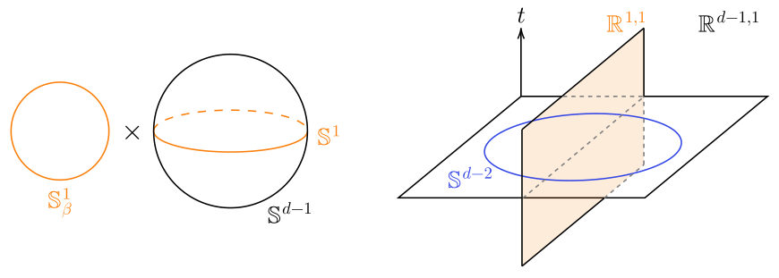
<figcaption class="paper-figure-caption"><b>Fig 1.</b> Figure 1. Geometries for the defect observables. Left: a surface defect wrapping S1 β × S1 in S1 β × Sd−1, as used to define the dSCE. Right: a planar surface defect (orange plane) intersecting the spherical entangling surface Sd−2 (blue) on the t = 0 slice of Rd−1,1, as used to define the dSRE.</figcaption>
</figure>
<figure class="paper-figure-card">
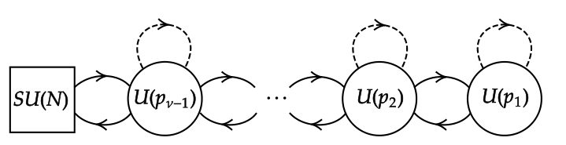
<figcaption class="paper-figure-caption"><b>Fig 2.</b> Figure 2. The linear quiver diagram of the 2d GLSM description corresponding to the GW surface defect. We adapt the (2, 2) field content in the figure. The dashed line represents the (2, 2) chiral multiplet Xi for each gauge group U(pi), i = 1, . . . , ν −1. There is also one (2, 2) vector multiplet Vi for each gauge group U(pi). The solid lines connecting U(pi) and U(pi+1) represent the (2, 2) (anti-)bifundamental chiral multiplets Φi(i+1) and Φ(i+1)i. The 2d GLSM is coupled to the 4d ambient theory by gauging the global symmetry SU(N).</figcaption>
</figure>
<figure class="paper-figure-card">

<figcaption class="paper-figure-caption"><b>Fig 3.</b> Figure 3. A conformal transformation maps the ambient spacetime Rd to S1 × Hd−1, the planar surface defect R2 ⊂Rd to S1 × H1 ⊂S1 × Hd−1, and the spherical entangling surface Sd−2 to the boundary of Hd−1. After the replica trick, the thermal circle S1 becomes S1 n.</figcaption>
</figure>
</div>

<p><strong>Summary.</strong> This work calculates key quantum observables, such as supersymmetric Casimir energy and Rényi entropy, associated with surface defects in higher-dimensional Superconformal Field Theories. By employing equivariant integration techniques, the authors derive explicit formulas linking these quantum corrections directly to underlying defect anomaly structures. This provides a powerful, anomaly-based framework for understanding quantum effects in strongly coupled quantum systems.</p>
<p><strong>Why it may be interesting.</strong> While highly theoretical, the connection between anomaly calculations in quantum field theory and geometric observables (like entropy) is fundamental to modern quantum gravity and condensed matter theory, providing deep insights into quantum corrections.</p>
<details>
<summary>Detailed structure</summary>
<p><strong>Main problem.</strong> The paper studies the contributions of half-BPS surface defects to supersymmetric Casimir energy and the universal logarithmic term of supersymmetric Rényi entropy in 4D and 6D Superconformal Field Theories (SCFTs).</p>
<p><strong>Main result.</strong> They derive closed expressions for these observables using defect anomaly polynomials, finding that in 4D $\mathcal{N}=4$ SYM, both observables depend on a single R-symmetry anomaly, while 6D theories show contributions from the gravitational anomaly.</p>
<p><strong>Method.</strong> The primary methods involve equivariant integration of defect anomaly polynomials and extending this to supersymmetric Rényi backgrounds, supplemented by checks using chiral algebras and holographic probe branes.</p>
<p><strong>Model / system.</strong> The study focuses on 4D $\mathcal{N}=4$ Super Yang–Mills theory with Gukov–Witten defects, and 6D $\mathcal{N}=(1, 0)$ SCFTs. The analysis also touches upon $\mathcal{N}=(2, 0)$ theories and involves concepts from AdS/CFT correspondence via probe D4-branes.</p>
<p><strong>Key observables.</strong> Supersymmetric Casimir energy (dSCE) and the universal logarithmic term of supersymmetric Rényi entropy (dSRE), which are expressed in terms of defect 't Hooft anomalies.</p>
<p><strong>Important parameters / regimes.</strong> The dimensionality (4D and 6D), the specific supersymmetry ($\mathcal{N}=4$, $\mathcal{N}=(1, 0)$), and the anomaly coefficients ($k_R$, gravitational anomaly terms).</p>
<p><strong>Assumptions / limitations.</strong> The analysis relies on anomaly control, assuming contributions are fixed by anomaly coefficients, and utilizes specific background solutions (e.g., $F_0=0$ type IIA AdS7 $\times$ M3) for brane calculations.</p>
<p><strong>Figures summary.</strong> Figure 1 illustrates the geometries relevant for calculating dSCE (surface defect wrapping $S^1_\beta \times S^1$) and dSRE (planar defect intersecting spherical entangling surface).</p>
<p><strong>Paper structure.</strong> The paper systematically develops the calculation of defect anomaly polynomials, applies this formalism to compute dSCE and dSRE in 4D and 6D SCFTs, and provides consistency checks using various advanced techniques like chiral algebras and brane dynamics.</p>
</details>
<details>
<summary>Abstract</summary>
<p>We study the contributions of half-BPS surface defects to supersymmetric Casimir energy and the universal logarithmic term of supersymmetric Rényi entropy in four- and six-dimensional SCFTs. Using equivariant integration of defect anomaly polynomials and its extension to supersymmetric Rényi backgrounds, we obtain closed expressions for these observables in terms of defect 't Hooft anomalies. For Gukov--Witten defects preserving transverse rotations in four-dimensional $\mathcal{N} = 4$ super Yang--Mills theories, both observables depend on a single R-symmetry anomaly. For $\mathcal{N} = (0, 4)$ defects in six-dimensional $\mathcal{N} = (1, 0)$ theories, additional terms arise from the gravitational anomaly. We provide complementary checks using chiral algebras, five-dimensional localization, and holographic probe branes at large $N$, while localized chiral fermions reproduce the gravitational-anomaly contributions. The framework also recovers Wilson-surface results in six-dimensional $\mathcal{N} = (2, 0)$ theories.</p>
</details>
<p><sub><a href="#top">↑ back to top</a></sub></p>
<h2 id="other-papers-30">Other papers (30)</h2>
<p><em>Papers from primary archives without highlighted authors or any topic match. Click to expand.</em></p>
<details>
<summary>Show other papers</summary>

<p><a id="paper-2610.18799"></a></p>
<h3 id="math679math"><a href="http://arxiv.org/abs/2610.18799v1">$\mathsf{EFI}\Leftrightarrow\mathsf{1PRS}$</a></h3>
<p><strong>Authors:</strong> Rishabh Batra<br>
<strong>Type:</strong> theory · <strong>Category:</strong> quantum information and computing · <strong>PDF:</strong> <a href="https://arxiv.org/pdf/2610.18799v1">https://arxiv.org/pdf/2610.18799v1</a><br>
<strong>Analysis basis:</strong> full PDF text, analyzed in chunks</p>
<div class="figure-strip-hint">↔ Scroll figures horizontally</div>
<div class="paper-figures-scroll">
<figure class="paper-figure-card">
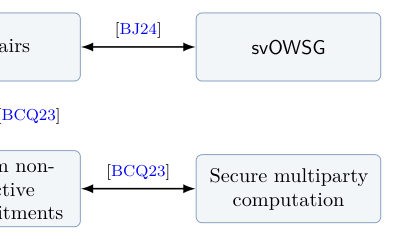
<figcaption class="paper-figure-caption"><b>Fig 1.</b> Figure 1: Equivalences at the bottom of Microcrypt.</figcaption>
</figure>
</div>
<p><strong>Summary.</strong> This paper proves a fundamental equivalence in quantum cryptography, showing that Entropy-Fixing Information (EFI) pairs are mathematically equivalent to expanding single-copy pseudorandom state generators (1PRS). By achieving a uniform characterization, the authors provide a deep quantum analogue to classical cryptographic relationships, solidifying the theoretical foundations of quantum randomness and security.</p>
<p><strong>Why it may be interesting.</strong> While highly abstract, the rigorous mathematical tools developed for bounding entropy and proving computational indistinguishability are foundational to understanding the limits of quantum computation and information processing.</p>
<details>
<summary>Detailed structure</summary>
<p><strong>Main problem.</strong> The paper aims to establish a uniform meta-complexity characterization for Entropy-Fixing Information (EFI) pairs, proving their equivalence to expanding single-copy pseudorandom state generators (1PRS).</p>
<p><strong>Main result.</strong> The authors prove the equivalence $\mathsf{EFI} \Leftrightarrow \mathsf{1PRS}$, providing the first uniform meta-complexity characterization for EFI pairs and establishing a quantum analogue of classical cryptographic equivalences.</p>
<p><strong>Method.</strong> The core method involves removing non-uniformity from previous constructions, utilizing entropy gap analysis, local prefix witnesses, and the random-start idea to establish the necessary entropy surplus.</p>
<p><strong>Model / system.</strong> The work operates within the framework of quantum information theory, dealing with pure quantum states, quantum circuits, and cryptographic primitives like EFI pairs and 1PRS.</p>
<p><strong>Key observables.</strong> Von Neumann entropy ($S$), algorithmic entropy ($H$), conditional entropy, and the entropy gap ($\chi$).</p>
<p><strong>Important parameters / regimes.</strong> Security parameter ($\lambda$), expansion factor, and specific polynomial-time computable parameters ($L, N, t, \ell$).</p>
<p><strong>Assumptions / limitations.</strong> The proof builds upon established quantum information facts and relies on the ability to use local prefix witnesses and the random-start idea to remove classical advice.</p>
<p><strong>Figures summary.</strong> Figure 1 illustrates the equivalence relationships between EFI pairs, 1PRS, svOWSG, and quantum commitments, forming a quantum analogue of classical cryptographic equivalences.</p>
<p><strong>Paper structure.</strong> The paper progresses by building upon prior work, establishing the equivalence chain ($    ext{EFI} \Leftrightarrow    ext{svOWSG} \Leftrightarrow     ext{quantum commitments} \Leftrightarrow    ext{1PRS}$), and culminating in the proof of the forward implication using entropy manipulations and witness constructions.</p>
</details>
<details>
<summary>Abstract</summary>
<p>A series of recent works has established EFI pairs as the "minimal" assumption for quantum cryptography. Recently, Cavalar et al. [CCC+26] showed that EFI pairs are equivalent to non-uniform expanding single-copy pseudorandom state generators (1PRS), and obtained a non-uniform meta-complexity characterization of EFI pairs. We remove the non-uniformity in their construction and prove that EFI pairs are equivalent to expanding 1PRS. As a corollary, we obtain the first uniform meta-complexity characterization of EFI pairs. Together with the equivalence of statistically verifiable one-way state generators and commitments proved by Batra and Jain [BJ24], this gives a quantum analogue of the classical equivalence between one-way functions, commitments, and pseudorandom generators.</p>
</details>
<p><sub><a href="#top">↑ back to top</a></sub></p>

<p><a id="paper-2610.18589"></a></p>
<h3 id="math686math-efficient-unitary-synthesis-via-block-sparse-hamiltonian-simulation"><a href="http://arxiv.org/abs/2610.18589v1">$T$-efficient unitary synthesis via block-sparse Hamiltonian simulation</a></h3>
<p><strong>Authors:</strong> Diyi Liu, Shuchen Zhu, Wibe Albert de Jong, Di Fang, David Williams-Young, Chao Yang<br>
<strong>Type:</strong> theory · <strong>Category:</strong> quantum information and computing · <strong>PDF:</strong> <a href="https://arxiv.org/pdf/2610.18589v1">https://arxiv.org/pdf/2610.18589v1</a><br>
<strong>Analysis basis:</strong> full PDF text, analyzed in chunks</p>
<div class="figure-strip-hint">↔ Scroll figures horizontally</div>
<div class="paper-figures-scroll">
<figure class="paper-figure-card">

<figcaption class="paper-figure-caption"><b>Fig 1.</b> FIG. 2. Schematic table access at fixed precision. Boxes in (a) denote queries to the dense block encoding of the target matrix in Yuan et al. [9]. Boxes in (b) denote queries to the block encodings UHk of our s pieces, illustrated with two piece tables. Each table has O(D2/s) block slots in the parameter range used in the construction. Dashed arrows link queries to their tables. The query counts are totals over the respective circuits.</figcaption>
</figure>
<figure class="paper-figure-card">
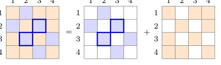
<figcaption class="paper-figure-caption"><b>Fig 2.</b> FIG. 3. One possible assignment with D = 4 and s = 2. Colored cells are nonzero b × b blocks; blank cells are zero. Each block and its conjugate-transpose partner are assigned to the same piece, indicated by their shared color. The out- lined blocks show one such pair. Thus H′ = H1 + H2 with Hermitian pieces.</figcaption>
</figure>
<figure class="paper-figure-card">

<figcaption class="paper-figure-caption"><b>Fig 3.</b> FIG. 4. Lookup table for the blue piece H1 in Fig. 3. Table rows correspond to block columns J, and table columns to slots u = 1, 2. Numbers give block row indices I, while gray cells represent zero padding. The outlined blocks (H1)3,2 and (H1)2,3 are adjoints, with paired addresses (2, 2) and (3, 1), respectively.</figcaption>
</figure>
<figure class="paper-figure-card">
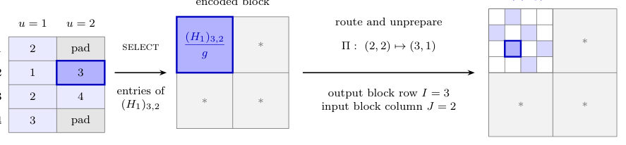
<figcaption class="paper-figure-caption"><b>Fig 4.</b> FIG. 5. Building UH1 from the lookup table in Fig. 4 and the matrix entries. The solid outlines trace address (J, u) = (2, 2): its entry I = 3 selects a unitary with encoded block (H1)3,2/g. Each selected unitary is constructed from the corresponding matrix block and g during classical preprocessing. select applies that unitary for the corresponding address. The permutation Π changes the block label from input J = 2 to output I = 3 and the slot from u = 2 to u′ = 1. This branch therefore contributes to block (3, 2) of the encoded matrix.</figcaption>
</figure>
<figure class="paper-figure-card">
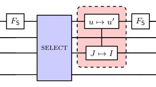
<figcaption class="paper-figure-caption"><b>Fig 5.</b> FIG. 6. Block encoding UK of a Hermitian piece K with b × b blocks. For K = H1, this circuit implements the con- struction in Fig. 5. The data registers are B, holding the input block column J, and T, holding the position xl within a block. The encoding ancillas are S, holding one of m padded slots per column, and the single flag qubit F. The Hadamard layer FS = H⊗log2 m prepares and unprepares the uniform slot state. For each nonpadding address (J, u) identifying row I, select applies a unitary on F, T whose F = 0 block is KIJ/g, where g bounds all block operator norms. Padding encodes zero. The permutation Π exchanges addresses (J, u) and (I, u′) of adjoint blocks on S, B. The block with...</figcaption>
</figure>
</div>
<p><strong>Summary.</strong> This paper develops a method to synthesize arbitrary $n$-qubit unitaries using Clifford+T circuits with improved efficiency. By employing block-sparse Hamiltonian simulation and the qDRIFT technique, the authors achieve a T-gate complexity of $\widetilde{O}(N^{8/7}L^{3/7})$ and prove this scaling is optimal under a specific computational model.</p>
<p><strong>Why it may be interesting.</strong> This work directly addresses the resource scaling for universal quantum computation, providing tighter, theoretically proven bounds on the required gate count (T-gates) for simulating complex quantum dynamics.</p>
<details>
<summary>Detailed structure</summary>
<p><strong>Main problem.</strong> Determining the minimum number of T gates required to implement an arbitrary n-qubit unitary circuit efficiently.</p>
<p><strong>Main result.</strong> The authors achieve a T-gate count of $\widetilde{O}(N^{8/7}L^{3/7}+NL)$ for constant precision, proving this exponent is optimal in the sequential block-SELECT model.</p>
<p><strong>Method.</strong> The construction simulates the Hermitian logarithm of the target unitary's traceless part by randomly partitioning it into block-sparse pieces and combining their evolutions using the qDRIFT technique.</p>
<p><strong>Model / system.</strong> The model is quantum computation using Clifford+T circuits to realize arbitrary $n$-qubit unitaries $U \in U(2n)$. The simulation focuses on the Hamiltonian evolution $e^{iAt}$.</p>
<p><strong>Key observables.</strong> T-gate count, operator norm error ($\epsilon$), and the number of clean ancillas.</p>
<p><strong>Important parameters / regimes.</strong> N (total qubits, $2^n$), L ($\log_2(N/\epsilon)$), and the exponent $8/7$ for the T-gate scaling.</p>
<p><strong>Assumptions / limitations.</strong> The analysis assumes $L \le N$ and relies on the sequential block-SELECT model for establishing lower bounds.</p>
<p><strong>Figures summary.</strong> Figure 1 illustrates matrix partitioning for $N=8$. Figure 2 compares schematic table access for dense vs. block-sparse encoding. Figure 3 shows the assignment of Hamiltonian blocks to two pieces ($H_1, H_2$).</p>
<p><strong>Paper structure.</strong> The paper builds upon prior work by first establishing the need for efficient encoding (comparing dense vs. block-sparse methods) and then combining this with techniques like qDRIFT and residual refinement to derive the final T-gate complexity bounds, culminating in an optimality proof.</p>
</details>
<details>
<summary>Abstract</summary>
<p>We construct Clifford+$T$ circuits implementing arbitrary $n$-qubit unitaries with worst-case $T$-count $\widetilde{O}(N^{8/7})$ at constant operator-norm error, where $N=2^n$, improving the previous exponent $5/4$. The construction uses $\widetilde{O}(N^{6/7})$ clean ancillas. The main idea is to reduce the data addressed by each query to the block-encoding circuit for a sparse piece while controlling the additional simulation work needed to combine the pieces. We simulate a Hermitian logarithm of the target by flattening its traceless part with a two-layer random similarity transformation, randomly partitioning the transformed generator into block-sparse Hermitian pieces, and combining their evolutions using qDRIFT. For a target operator-norm error $ε\in(0,1/2)$, let $L=\log_2(N/ε)$, the qubit count plus the requested bits of accuracy. By successively correcting the approximation error, we obtain a circuit using $\widetilde{O}(N^{8/7}L^{3/7}+NL)$ $T$ gates and $\widetilde{O}(N)$ clean ancillas whenever $L\le N$. We also prove that, at constant precision, the exponent $8/7$ is optimal within a sequential block-SELECT model.</p>
</details>
<p><sub><a href="#top">↑ back to top</a></sub></p>

<p><a id="paper-2610.17395"></a></p>
<h3 id="a-controlled-null-result-for-per-gate-riemannian-optimization-in-vqe"><a href="http://arxiv.org/abs/2610.17395v1">A Controlled Null Result for Per-Gate Riemannian Optimization in VQE</a></h3>
<p><strong>Authors:</strong> Polina Belozerova, Pavel Osinenko<br>
<strong>Type:</strong> theory · <strong>Category:</strong> quantum information and computing · <strong>PDF:</strong> <a href="https://arxiv.org/pdf/2610.17395v1">https://arxiv.org/pdf/2610.17395v1</a><br>
<strong>Analysis basis:</strong> full PDF text, analyzed in chunks</p>
<div class="figure-strip-hint">↔ Scroll figures horizontally</div>
<div class="paper-figures-scroll">
<figure class="paper-figure-card">

<figcaption class="paper-figure-caption"><b>Fig 1.</b> FIGURE 1. Depth calibration used before ranking optimizers. Operating points are chosen near the shallowest depths that can reach chemical accuracy; cells that no tested method can solve are not used as evidence for optimizer superiority.</figcaption>
</figure>
<figure class="paper-figure-card">

<figcaption class="paper-figure-caption"><b>Fig 2.</b> FIGURE 2. Matched Euler-coordinate Adam versus direct per-gate manifold Adam. Dots denote individual seeds and lines denote the geometric mean at the best learning rate per method. The two valid methods are interleaved; projected matrix Adam sits far above both.</figcaption>
</figure>
<figure class="paper-figure-card">

<figcaption class="paper-figure-caption"><b>Fig 3.</b> FIGURE 3. Ingredient and failure-mode ablations. The safe geometric choices do not separate in the resolved cells; apparent large effects arise from invalid baselines, unsafe retractions, or insufficient learning-rate grids.</figcaption>
</figure>
</div>
<p><strong>Summary.</strong> This paper rigorously tests if using Riemannian geometry to optimize individual gates in VQE circuits improves performance over standard classical optimization methods. The authors find no practical benefit in the tested setting, providing a detailed validation checklist for future comparisons. The work is significant for establishing best practices in quantum optimization algorithm benchmarking.</p>
<p><strong>Why it may be interesting.</strong> It provides a crucial, rigorous validation checklist for the field of quantum machine learning, helping researchers distinguish genuine algorithmic improvements from numerical artifacts.</p>
<details>
<summary>Detailed structure</summary>
<p><strong>Main problem.</strong> The paper investigates whether optimizing variational quantum eigensolver (VQE) circuits using per-gate Riemannian optimization offers a practical advantage over standard classical optimizers like Adam.</p>
<p><strong>Main result.</strong> The study concludes a 'controlled null result,' finding no measurable practical advantage for the Riemannian machinery over a matched Euler-coordinate baseline on a validated benchmark.</p>
<p><strong>Method.</strong> The authors compare Riemannian Adam updates (treating gates as points on U(2)) against Adam updates on an unconstrained Euler-angle chart, using rigorous validation protocols.</p>
<p><strong>Model / system.</strong> The model is VQE applied to neutral hydrogen chains, where the ansatz involves trainable single-qubit U(2) gates followed by a fixed CNOT entangler.</p>
<p><strong>Key observables.</strong> Geometric mean best energy error (|E - \lambda_min|) and success rate at chemical accuracy (1.6 x 10^-3 Ha).</p>
<p><strong>Important parameters / regimes.</strong> The comparison is restricted to per-gate U(2) optimization, excluding large-block circuits or noisy hardware.</p>
<p><strong>Assumptions / limitations.</strong> The comparison is only valid if the optimal learning rate is found in the interior of the grid, and the benchmark must be non-trivial (e.g., Schmidt rank &gt; 1).</p>
<p><strong>Figures summary.</strong> Tables compare optimization performance metrics (Table 2), and figures illustrate the comparison between Euler-coordinate and manifold Adam, highlighting failure modes (Figure 3).</p>
<p><strong>Paper structure.</strong> The paper establishes the problem, details the Riemannian vs. Euler methods, presents results showing no advantage, and dedicates significant space to identifying and detailing four specific failure modes that can create false positives.</p>
</details>
<details>
<summary>Abstract</summary>
<p>Parametrized gates in a variational quantum eigensolver (VQE) live on a product of unitary groups, which makes Riemannian optimization a natural candidate for improving training. We test this candidate in the clean per-gate setting: each single-qubit gate is optimized directly on U (2) and compared with Adam on an unconstrained Euler-angle chart representing the same physical gate, initialized from the same unitaries and tuned with a separate learning-rate sweep. On a validated hydrogen-chain benchmark, we find no measurable practical advantage from the Riemannian machinery. The direct manifold optimizer and the Euler-coordinate baseline are interleaved in final error and success rate; the classical coordinate baseline is not slower in iterations on the successful cells; and the choices of Riemannian metric, retraction, and momentum vector transport do not change the conclusion. We also identify four failure modes that can manufacture an apparent positive result: a trivial product-state benchmark, a projected-matrix Adam baseline that discards most of its own step, a non-unitary inherited Cayley retraction that lets the reported energy pass below the variational minimum, and a learning-rate grid whose optimum sits at its boundary. Each failure mode produced a plausible multi-seed result in our own workflow before being caught. The practical output of this paper is therefore a controlled null result and a validation checklist for VQE optimizer comparisons.</p>
</details>
<p><sub><a href="#top">↑ back to top</a></sub></p>

<p><a id="paper-2610.18854"></a></p>
<h3 id="a-hierarchy-of-exact-lower-bounds-on-the-laughlin-spectral-gap"><a href="http://arxiv.org/abs/2610.18854v1">A hierarchy of exact lower bounds on the Laughlin spectral gap</a></h3>
<p><strong>Authors:</strong> Michael G. Scheer, Eslam Khalaf<br>
<strong>Type:</strong> theory · <strong>Category:</strong> strongly correlated electrons · <strong>PDF:</strong> <a href="https://arxiv.org/pdf/2610.18854v1">https://arxiv.org/pdf/2610.18854v1</a><br>
<strong>Analysis basis:</strong> full PDF text, analyzed in chunks</p>
<div class="figure-strip-hint">↔ Scroll figures horizontally</div>
<div class="paper-figures-scroll">
<figure class="paper-figure-card">

<figcaption class="paper-figure-caption"><b>Fig 1.</b> FIG. 1. (a) The tail bound ω2 in the thermodynamic limit NΦ →∞. We numerically compute these values using the upper bound in Eq. (C51) with N0 = 200. Strictly speaking, this is an upper bound on limNΦ→∞ω2 but the error due to the finite N0 value is less than that intrinsic to floating point arithmetic. (b) Spectral gap lower bounds for NΦ = ∞and NΦ = 1000 with r = 25. For NΦ = ∞, the last two data points are 0.0338 for r′ = 15 and 0.0693 for r′ = 16 (rounded down). For NΦ = 1000 the last two data points are 0.0245 for r′ = 15 and 0.0591 for r′ = 16 (rounded down).</figcaption>
</figure>
</div>
<p><strong>Summary.</strong> This paper presents a sophisticated bootstrap method to derive exact lower bounds on the spectral gap for Hamiltonians describing strongly correlated electron systems, such as those in the Fractional Quantum Hall Effect. By reformulating the gap problem as a semidefinite programming problem, the authors provide a general technique to obtain mathematically rigorous proofs for spectral gaps, which is applicable beyond the specific Laughlin model.</p>
<p><strong>Why it may be interesting.</strong> The development of a general method to convert numerical SDP bounds into rigorous mathematical proofs is highly valuable for theoretical condensed matter physics, especially for systems where exact diagonalization is impossible.</p>
<details>
<summary>Detailed structure</summary>
<p><strong>Main problem.</strong> The primary goal is to derive mathematically rigorous and numerically exact lower bounds on the spectral gap of the Laughlin spectral gap Hamiltonian.</p>
<p><strong>Main result.</strong> The authors establish a general bootstrap approach using semidefinite programming (SDP) to prove $H^2 \succeq \epsilon H$, yielding a positive lower bound on the spectral gap, which is shown to be independent of the filling fraction $
u$ for $
u \le 1/3$.</p>
<p><strong>Method.</strong> The method relies on decomposing the Hamiltonian squared ($H^2$) into parts that can be bounded analytically or via finite Semidefinite Programs (SDPs). Novel algorithms are introduced to convert numerical SDP results into mathematically rigorous proofs.</p>
<p><strong>Model / system.</strong> The system models the two-dimensional electron gas exhibiting Fractional Quantum Hall Effects (FQHE), focusing on the first Haldane pseudopotential Hamiltonian on the sphere. The analysis is generalized to other correlated states like the Moore-Read state.</p>
<p><strong>Key observables.</strong> The spectral gap ($\epsilon$), the neutral gap, and the charge gap are the key observables of interest.</p>
<p><strong>Important parameters / regimes.</strong> The number of flux quanta ($N_\Phi$), the filling fraction ($
u$), and cutoff parameters ($r' \le r \le N_\Phi$) are crucial parameters.</p>
<p><strong>Assumptions / limitations.</strong> The approach assumes the validity of Knabe's observation ($H^2 \succeq \epsilon H$) and involves approximations when mapping spherical operators to planar limits in the thermodynamic limit ($N_\Phi 	o \infty$).</p>
<p><strong>Figures summary.</strong> Not specified in the notes, but the analysis involves calculating bounds for quantities like $ ilde{\omega}^2$ using specific parameters.</p>
<p><strong>Paper structure.</strong> The paper develops a bootstrap approach based on SDPs, utilizing symmetry averaging on the sphere, decomposing $H^2$, and finally introducing advanced algorithms to convert numerical bounds into rigorous mathematical certificates, especially in the thermodynamic limit.</p>
</details>
<details>
<summary>Abstract</summary>
<p>We develop a bootstrap approach to deriving lower bounds on the spectral gap of the first Haldane pseudopotential Hamiltonian on the sphere with $N_Φ$ flux quanta for arbitrary $N_Φ$, including in the thermodynamic limit $N_Φ\to \infty$. Our approach can in principle be generalized to pseudopotentials describing other model wavefunctions such as the Moore-Read state or Read-Rezayi sequence. Our approach is based on Knabe's observation that if $H$ is a Hamiltonian with ground state energy $0$ then the spectral gap is at least $ε> 0$ if and only if $H^2 \succeq εH$. To show this inequality, we split $H^2$ into two parts, one that can be analytically bounded and another that can be bounded using a finite semidefinite program (SDP). Crucially, the size of this program is determined only by cutoff parameters, and the program depends on $N_Φ$ only parametrically, allowing us to obtain numerically exact (up to solver precision) lower bounds on the gap. In order to turn these numerical bounds into mathematically rigorous bounds, we introduce an algorithm that can produce nearly-optimal exact feasible points for large rational SDPs. We additionally provide an algorithm that establishes the rank stability of the semidefinite program in the limit $N_Φ\to \infty$ which is needed to certify the bound in the thermodynamic limit. Beyond establishing the Laughlin gap and revealing a potential method for deriving spectral gap lower bounds for other pseudopotentials, our work provides a general method for turning numerical semidefinite programming bounds into rigorous mathematical proofs, which may have wide applicability.</p>
</details>
<p><sub><a href="#top">↑ back to top</a></sub></p>

<p><a id="paper-2610.17500"></a></p>
<h3 id="a-three-eighths-upper-bound-on-the-stabilizer-rank-exponent-of-face-center-magic-states"><a href="http://arxiv.org/abs/2610.17500v1">A three-eighths upper bound on the stabilizer-rank exponent of face-center magic states</a></h3>
<p><strong>Authors:</strong> Samuel Bevins<br>
<strong>Type:</strong> theory · <strong>Category:</strong> quantum information and computing · <strong>PDF:</strong> <a href="https://arxiv.org/pdf/2610.17500v1">https://arxiv.org/pdf/2610.17500v1</a><br>
<strong>Analysis basis:</strong> full PDF text, analyzed in chunks</p>
<div class="figure-strip-hint">↔ Scroll figures horizontally</div>
<div class="paper-figures-scroll">
<figure class="paper-figure-card">

<figcaption class="paper-figure-caption"><b>Fig 1.</b> Low-resolution page preview, page 2</figcaption>
</figure>
<figure class="paper-figure-card">

<figcaption class="paper-figure-caption"><b>Fig 2.</b> Low-resolution page preview, page 3</figcaption>
</figure>
</div>
<p><strong>Summary.</strong> This paper derives a new, improved upper bound for the stabilizer-rank exponent of the qubit face-center magic state. By constructing and analyzing large-scale stabilizer identities, the authors prove that $\gamma_T \le 3/8$. This result tightens theoretical limits on the complexity of simulating quantum states using stabilizer formalisms.</p>
<p><strong>Why it may be interesting.</strong> This work directly addresses the complexity scaling of quantum states, which is fundamental for understanding the resource requirements and simulation limits of quantum computation.</p>
<details>
<summary>Detailed structure</summary>
<p><strong>Main problem.</strong> The paper aims to determine a tighter upper bound on the stabilizer-rank exponent ($\gamma_T$) associated with the qubit face-center magic state.</p>
<p><strong>Main result.</strong> The authors establish a new upper bound of $\gamma_T \le 3/8$, which improves upon the previously known bound of $\log_2(3)/4$.</p>
<p><strong>Method.</strong> The methodology involves constructing explicit, large-scale stabilizer identities and utilizing a recurrence relation derived from a symmetry-based substitution to bound the rank growth.</p>
<p><strong>Model / system.</strong> The analysis focuses on the qubit face-center magic state, $|T
angle$, and its tensor product copies, $|T
angle^{\otimes m}$. The context involves stabilizer decompositions relevant for simulating quantum circuits.</p>
<p><strong>Key observables.</strong> The exact complex stabilizer rank $\chi(|\psi
angle)$ and the stabilizer-rank exponent $\gamma_T$.</p>
<p><strong>Important parameters / regimes.</strong> The number of copies, $m$, and the resulting exponent $\gamma_T$.</p>
<p><strong>Assumptions / limitations.</strong> The result is an upper bound and does not determine the optimal exponent or provide a lower bound. The authors do not separate T-type and H-type orbit exponents.</p>
<p><strong>Figures summary.</strong> Table I details a twenty-four-word identity for $v^{\otimes 6}$, while Table II provides a coordinate check of the identity for $v^{\otimes 5}$ across seven orbits.</p>
<p><strong>Paper structure.</strong> The paper builds the argument by first combining smaller stabilizer identities into larger ones, leading to a recurrence relation for the rank, which ultimately yields the improved $O(2^{3m/8})$ bound.</p>
</details>
<details>
<summary>Abstract</summary>
<p>We give an explicit construction proving that the exact stabilizer rank of $m$ copies of the qubit face-center magic state is $O(2^{3m/8})$. Two symmetry-related fifteen-term identities combine into a twenty-four-term decomposition at twelve copies. The balanced structure of this decomposition yields a substitution that adds eight copies at a cost of eight terms per existing term. The resulting bound $γ_T \leq 3/8$ improves the previously published exponent $\log_2(3)/4$.</p>
</details>
<p><sub><a href="#top">↑ back to top</a></sub></p>

<p><a id="paper-2610.17836"></a></p>
<h3 id="a-tutorial-on-quantum-amplitude-embedding-with-data-re-uploading"><a href="http://arxiv.org/abs/2610.17836v1">A Tutorial on Quantum Amplitude Embedding with Data Re-Uploading</a></h3>
<p><strong>Authors:</strong> Hyojun Ahn, Joongheon Kim<br>
<strong>Type:</strong> theory · <strong>Category:</strong> quantum information and computing · <strong>PDF:</strong> <a href="https://arxiv.org/pdf/2610.17836v1">https://arxiv.org/pdf/2610.17836v1</a><br>
<strong>Analysis basis:</strong> full PDF text, analyzed in chunks</p>
<div class="figure-strip-hint">↔ Scroll figures horizontally</div>
<div class="paper-figures-scroll">
<figure class="paper-figure-card">

<figcaption class="paper-figure-caption"><b>Fig 1.</b> Fig. 1. Amplitude-embedded variational quantum model with one upload. S(x) writes the normalized image into six qubits, and an optimizer trains θ.</figcaption>
</figure>
<figure class="paper-figure-card">

<figcaption class="paper-figure-caption"><b>Fig 2.</b> Fig. 2. One upload of four features. Both encodings use rotations whose angles depend on the data. Angle encoding turns one qubit per feature, and each angle αk,c(x) of amplitude embedding splits the probability mass.</figcaption>
</figure>
<figure class="paper-figure-card">
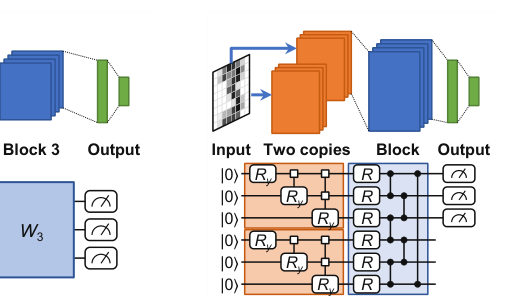
<figcaption class="paper-figure-caption"><b>Fig 3.</b> Fig. 3. Re-uploading schemes for amplitude embedding. Orange blocks upload the input, and blue blocks are trainable.</figcaption>
</figure>
<figure class="paper-figure-card">

<figcaption class="paper-figure-caption"><b>Fig 4.</b> Fig. 5. Test R2 on synthetic targets of order 2, 4, and 6 (mean and standard deviation over ten seeds). The dashed line is the best quadratic form.</figcaption>
</figure>
<figure class="paper-figure-card">
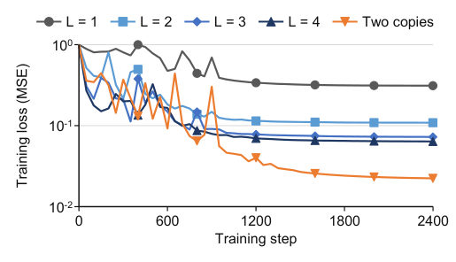
<figcaption class="paper-figure-caption"><b>Fig 5.</b> Fig. 4. Training loss on the order-4 target (ten-seed mean).</figcaption>
</figure>
</div>
<p><strong>Summary.</strong> This tutorial analyzes how repeatedly re-uploading classical data into a quantum amplitude embedding model increases its expressive power by raising the reachable polynomial order. The authors demonstrate that while more uploads increase capacity, this benefit is not always optimal, showing that for many tasks, one upload is sufficient, and excessive uploads can degrade performance due to accumulated gate errors.</p>
<p><strong>Why it may be interesting.</strong> While focused on quantum machine learning, the analysis of circuit depth, resource scaling, and error accumulation due to repeated state preparation is highly relevant to designing fault-tolerant quantum algorithms and understanding the limits of variational quantum circuits.</p>
<details>
<summary>Detailed structure</summary>
<p><strong>Main problem.</strong> The paper aims to explain the functional gain provided by data re-uploading in amplitude-embedded variational quantum models and to quantify this performance improvement.</p>
<p><strong>Main result.</strong> Re-uploading enriches the model by raising the reachable polynomial order by two per upload, but for tasks like quadratic classification, one upload is optimal, as further uploads degrade performance and increase gate error.</p>
<p><strong>Method.</strong> The authors analyze sequential and parallel re-uploading schemes, deriving the resulting polynomial order and comparing performance metrics like the test coefficient of determination across different upload counts.</p>
<p><strong>Model / system.</strong> The model utilizes amplitude embedding within variational quantum circuits, where the input data is encoded into the amplitudes of qubits. Re-uploading involves repeatedly encoding the input state between trainable quantum blocks.</p>
<p><strong>Key observables.</strong> Test coefficient of determination ($R^2$), classifier fidelity, and the polynomial order of the target function.</p>
<p><strong>Important parameters / regimes.</strong> The number of uploads ($L$ or $k$), the polynomial order of the target (e.g., order four or six), and the two-qubit gate error rate ($\epsilon$).</p>
<p><strong>Assumptions / limitations.</strong> The analysis assumes a fixed budget of trainable parameters and that the gain must be known before spending costly state preparation gates.</p>
<p><strong>Figures summary.</strong> Figures illustrate the model structure with one upload and show comparisons between encoding methods. One figure details re-uploading schemes (sequential vs. parallel), and another tracks performance degradation versus gate error.</p>
<p><strong>Paper structure.</strong> The paper first introduces amplitude embedding and the problem of re-uploading. It then provides a theoretical analysis comparing sequential and parallel re-uploading schemes regarding the polynomial order. Finally, it presents simulation results on synthetic targets and handwritten digits to quantify the performance gain and error tolerance.</p>
</details>
<details>
<summary>Abstract</summary>
<p>Amplitude embedding lets a variational quantum model read many classical features with few qubits, but the model output is then only a quadratic form in the normalized input. Data re-uploading, which encodes the input repeatedly between trainable blocks, can be used to enrich such a model. Because every additional upload of an amplitude embedding repeats a costly state preparation, the gain that an upload buys has to be known before the gates are spent. This tutorial thus addresses the problem of explaining what data re-uploading adds to an amplitude-embedded model and how large the gain is. We express sequential re-uploading and parallel re-uploading with two copies in one notation and show that each upload raises the reachable polynomial order by two. Under one trainable circuit family and one budget of trainable parameters, simulation results show that re-uploading raises the test coefficient of determination from 0.689 to between 0.883 and 0.975 on targets of order four and from 0.337 to between 0.642 and 0.783 on targets of order six, on all ten seeds. On a quadratic target and on handwritten digits, one upload remains the best choice, and every additional upload lowers the gate error that the classifier tolerates. These results help designers match the number of uploads to the polynomial order of the task at hand.</p>
</details>
<p><sub><a href="#top">↑ back to top</a></sub></p>

<p><a id="paper-2610.17520"></a></p>
<h3 id="chromatic-block-gibbs-p-bit-decoding-of-qldpc-codes"><a href="http://arxiv.org/abs/2610.17520v1">Chromatic Block-Gibbs p-Bit Decoding of QLDPC Codes</a></h3>
<p><strong>Authors:</strong> Mert Gökduman, Cyril Guyot, Henry D. Pfister<br>
<strong>Type:</strong> theory · <strong>Category:</strong> quantum information and computing · <strong>PDF:</strong> <a href="https://arxiv.org/pdf/2610.17520v1">https://arxiv.org/pdf/2610.17520v1</a><br>
<strong>Analysis basis:</strong> full PDF text, analyzed in chunks</p>
<div class="figure-strip-hint">↔ Scroll figures horizontally</div>
<div class="paper-figures-scroll">
<figure class="paper-figure-card">

<figcaption class="paper-figure-caption"><b>Fig 1.</b> Fig. 1. Block failure rate versus bit-flip rate p for the B1 [[882, 24, 18 ≤ d ≤24]] code under code-capacity noise. The p-bit decoder (linear β : 0.175 →1.75, 256 replicas, up to 3000 sweeps per leg and 24 legs) is compared with BP, BP+OSD-0 [8], BPGD [18], and impulse decoding [24].</figcaption>
</figure>
<figure class="paper-figure-card">
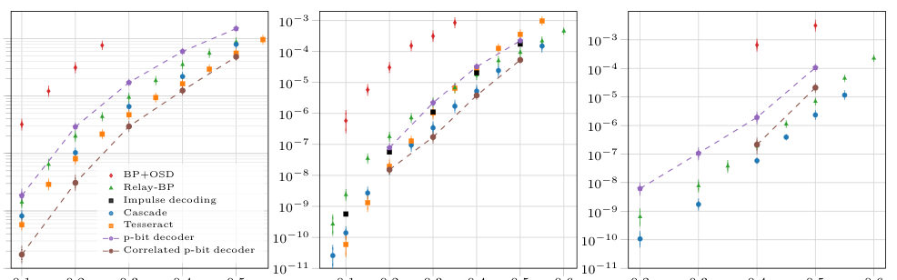
<figcaption class="paper-figure-caption"><b>Fig 2.</b> Fig. 2. Logical error rate per logical qubit per syndrome round versus physical error rate for the [[72, 12, 6]], [[144, 12, 12]], and [[288, 12, 18]] bivariate-bicycle codes under uniform circuit-level noise. The p-bit decoder acts on the DEM obtained by retaining the X-error component, while the correlated p-bit decoder acts on the full undecomposed DEM. Reference curves: Cascade [38], Tesseract [39], Relay-BP [21], impulse decoding [24], and BP+OSD [8].</figcaption>
</figure>
</div>
<p><strong>Summary.</strong> This paper introduces a novel decoding technique for QLDPC codes called Chromatic Block-Gibbs p-Bit Decoding. It uses a stochastic, constraint-annealed approach to search for error corrections, leveraging parallel updates via graph coloring. The results show this method is a competitive alternative to existing decoders for fault-tolerant quantum computation.</p>
<p><strong>Why it may be interesting.</strong> The stochastic, local update dynamics and the use of graph coloring for parallel updates provide novel computational tools applicable to simulating complex quantum error correction processes.</p>
<details>
<summary>Detailed structure</summary>
<p><strong>Main problem.</strong> Developing an efficient and competitive decoder for Quantum Low-Density Parity-Check (QLDPC) codes, which are essential for fault-tolerant quantum computing.</p>
<p><strong>Main result.</strong> The proposed constraint-annealed p-bit decoding method achieves logical error rates on par with leading decoders under both code-capacity and circuit-level noise models.</p>
<p><strong>Method.</strong> The decoder uses probabilistic bits (p-bits) and implements a chromatic block-Gibbs update scheme to stochastically search for syndrome-valid error corrections.</p>
<p><strong>Model / system.</strong> The system involves QLDPC codes defined by a parity-check matrix H, where decoding aims to find the error vector e that satisfies the syndrome measurement s = He.</p>
<p><strong>Key observables.</strong> Logical error rates (under bit-flip and circuit noise), block failure rates, and the Hamming weight of the candidate correction.</p>
<p><strong>Important parameters / regimes.</strong> Update budget, constraint strength ($eta$), number of replicas ($R$), and the physical error rate ($p$).</p>
<p><strong>Assumptions / limitations.</strong> The comparison is limited to explicitly stated update budgets, and the method's theoretical framework for nonstationary annealing is still under development.</p>
<p><strong>Figures summary.</strong> Figures compare block failure rates and logical error rates for various codes under different noise models, demonstrating performance relative to established decoders.</p>
<p><strong>Paper structure.</strong> The paper introduces the p-bit model, details the chromatic block-Gibbs update mechanism, outlines the constraint-annealing search algorithm, and concludes with performance comparisons across various noise regimes.</p>
</details>
<details>
<summary>Abstract</summary>
<p>We introduce a parallel decoder for quantum low-density parity-check (QLDPC) codes based on probabilistic bits (p-bits), tunable stochastic binary units controlled by local fields. The idea is that predicted error configurations, interpreted as explanations of the observed syndrome, are updated stochastically using local Gibbs conditionals, while a progressively strengthened parity penalty drives the search toward syndrome-valid configurations. A coloring of the decoding graph enables parallel block updates, and independent replicas and restarts provide trajectory diversity. The best candidate encountered during the search is returned, mirroring the candidate-selection strategy of recent ensemble decoders. At the stated update budgets, the resulting logical error rates are on par with leading decoders under both code-capacity and circuit-level noise. While the total number of variable resamplings can be substantially larger than the message-update count of BP-based alternatives, the numerical results establish constraint-annealed p-bit dynamics as a competitive stochastic alternative for QLDPC decoding and motivate further study of hardware-native implementations.</p>
</details>
<p><sub><a href="#top">↑ back to top</a></sub></p>

<p><a id="paper-2610.17920"></a></p>
<h3 id="conformal-soft-modes-at-elastic-instabilities"><a href="http://arxiv.org/abs/2610.17920v1">Conformal soft modes at elastic instabilities</a></h3>
<p><strong>Authors:</strong> Lars Franke, Nick Sander, Markus Garst<br>
<strong>Type:</strong> theory · <strong>Category:</strong> other · <strong>PDF:</strong> <a href="https://arxiv.org/pdf/2610.17920v1">https://arxiv.org/pdf/2610.17920v1</a><br>
<strong>Analysis basis:</strong> full PDF text, analyzed in chunks</p>
<div class="figure-strip-hint">↔ Scroll figures horizontally</div>
<div class="paper-figures-scroll">
<figure class="paper-figure-card">

<figcaption class="paper-figure-caption"><b>Fig 1.</b> FIG. 1. Macroscopic zero modes of a crystal with vanishing bulk modulus and principal strain εA ij ∝δij. (a) Dilation and (b) a special conformal transformation (SCT). The amplitude increases from left to right and is exaggerated for illustration purposes.</figcaption>
</figure>
<figure class="paper-figure-card">
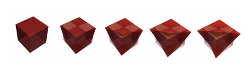
<figcaption class="paper-figure-caption"><b>Fig 2.</b> FIG. 2. Macroscopic zero mode at a symmetry-breaking insta- bility specified by the amplitude d in Eq. (11). The amplitude increases from left to right and is exaggerated for illustration purposes.</figcaption>
</figure>
</div>
<p><strong>Summary.</strong> This theoretical work investigates the critical fluctuations in crystals near elastic phase transitions by analyzing the zero modes of the displacement field. It shows that these soft modes obey conditions related to conformal symmetries, identifying specific modes like dilation and special conformal transformations depending on the type of instability. This provides a powerful mathematical framework for understanding critical elastic phenomena.</p>
<p><strong>Why it may be interesting.</strong> The connection drawn between critical elastic fluctuations and conformal symmetries (conformal Killing equations) provides a deep mathematical structure to mechanical phase transitions, which is relevant for understanding emergent symmetries in condensed matter systems.</p>
<details>
<summary>Detailed structure</summary>
<p><strong>Main problem.</strong> The paper analyzes the nature of critical fluctuations and zero modes in crystals approaching continuous elastic phase transitions (elastic instabilities). It seeks to characterize the associated soft modes using linear elasticity theory.</p>
<p><strong>Main result.</strong> The critical fluctuations are governed by conditions reminiscent of the conformal Killing equation, leading to specific zero modes: one dilation mode and three special conformal transformation modes for isostructural instabilities, and conformal transformations of 2D Minkowski space for symmetry-breaking instabilities.</p>
<p><strong>Method.</strong> The analysis uses linear elasticity theory, deriving zero mode conditions from the vanishing internal stress ($ ext{C}\Gamma = 0$) and classifying instabilities based on the vanishing eigenmoduli of the elasticity tensor.</p>
<p><strong>Model / system.</strong> The system is crystalline matter near an elastic instability. The theory is built upon the displacement vector $\mathbf{u}(\mathbf{x})$ and the elastic energy density $W$, analyzed via the strain tensor $\varepsilon_{ij}$.</p>
<p><strong>Key observables.</strong> Zero mode displacement field $\mathbf{u}(\mathbf{x})$, elastic eigenmoduli, principal strains ($\varepsilon_{\alpha ij}$), and the resulting conformal transformations.</p>
<p><strong>Important parameters / regimes.</strong> The nature of the instability (isostructural vs. symmetry-breaking), the dimensionality of the critical subspace, and the elastic constants $C_{ijkl}$.</p>
<p><strong>Assumptions / limitations.</strong> The analysis is restricted to linear elasticity theory and assumes the absence of external stresses; the zero mode condition (vanishing internal stress) is shown to be necessary.</p>
<p><strong>Figures summary.</strong> Figures illustrate macroscopic zero modes for both the volumetric singlet (showing Dilation and SCT) and at a symmetry-breaking instability, demonstrating the physical manifestation of the derived mathematical modes.</p>
<p><strong>Paper structure.</strong> The paper progresses by establishing the zero mode condition from the vanishing internal stress, classifying instabilities based on the resulting strain subspace ($\Gamma$), and then deriving the specific mathematical forms of the zero modes (conformal Killing/Minkowski transformations) associated with different types of instability.</p>
</details>
<details>
<summary>Abstract</summary>
<p>In case a crystal is close to a continuous elastic phase transition, pronounced critical fluctuations emerge. We show that on the level of linear elasticity theory the displacement vector for these critical modes obeys a condition reminiscent of the conformal Killing equation. For an isostructural instability, four critical modes arise corresponding to one dilation and three special conformal transformations. At crystal symmetry-breaking instabilities, the critical fluctuations include a continuum of modes even for crystals with finite size. For certain cases, these comprise the conformal transformations associated with two-dimensional Minkowski space. These results have implications for critical elastic phenomena as well as for extremal mechanical metamaterials.</p>
</details>
<p><sub><a href="#top">↑ back to top</a></sub></p>

<p><a id="paper-2610.17452"></a></p>
<h3 id="crystal-growth-magnetic-and-transport-properties-of-the-candidate-altermagnet-crmath763mathnbsmath764math"><a href="http://arxiv.org/abs/2610.17452v1">Crystal growth, magnetic, and transport properties of the candidate altermagnet Cr$_{1/4}$NbS$_{2}$</a></h3>
<p><strong>Authors:</strong> Nashra Pistawala, Martin R. Lees, Geetha Balakrishnan, Daniel A. Mayoh<br>
<strong>Type:</strong> experiment · <strong>Category:</strong> strongly correlated electrons · <strong>PDF:</strong> <a href="https://arxiv.org/pdf/2610.17452v1">https://arxiv.org/pdf/2610.17452v1</a><br>
<strong>Analysis basis:</strong> full PDF text, analyzed in chunks</p>
<div class="figure-strip-hint">↔ Scroll figures horizontally</div>
<div class="paper-figures-scroll">
<figure class="paper-figure-card">
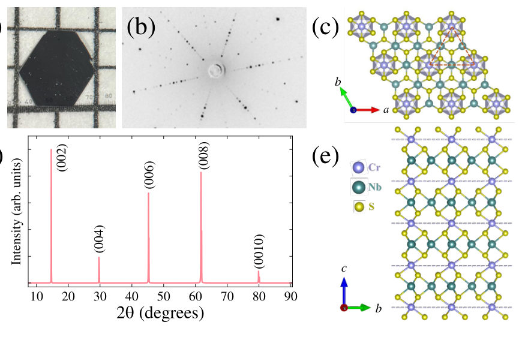
<figcaption class="paper-figure-caption"><b>Fig 1.</b> FIG. 1. (a) Image of an as-grown single crystal of Cr1/4NbS2; each grid square corresponds to</figcaption>
</figure>
<figure class="paper-figure-card">
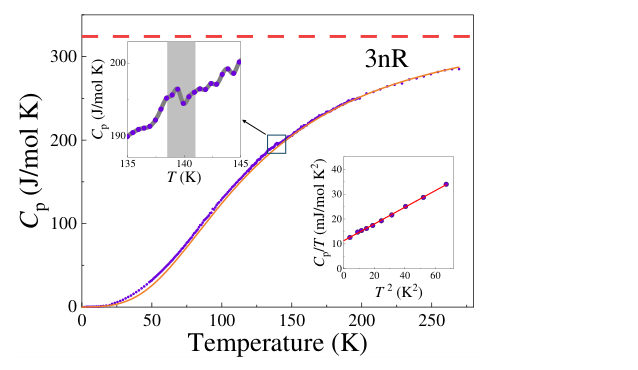
<figcaption class="paper-figure-caption"><b>Fig 2.</b> FIG. 2. Temperature dependence of the heat capacity of Cr1/4NbS2. The solid orange line is a fit to the</figcaption>
</figure>
<figure class="paper-figure-card">
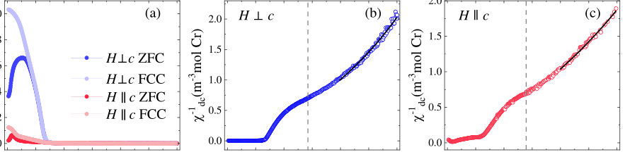
<figcaption class="paper-figure-caption"><b>Fig 3.</b> FIG. 3. (a) Zero-field-cooled (ZFC) and field-cooled (FC) χ(T) measured under an applied field of µ0H =</figcaption>
</figure>
<figure class="paper-figure-card">

<figcaption class="paper-figure-caption"><b>Fig 4.</b> FIG. 4. Magnetization as a function of applied field measured at various temperatures for (a) H ⊥c and (b)</figcaption>
</figure>
<figure class="paper-figure-card">

<figcaption class="paper-figure-caption"><b>Fig 5.</b> FIG. 5. Magnetotransport measurements on Cr1/4NbS2. (a) Temperature dependence of ρxx(T) measured</figcaption>
</figure>
</div>
<p><strong>Summary.</strong> This work reports the first single-crystal synthesis and comprehensive characterization of $   ext{Cr}_{1/4}   ext{NbS}_2$, a promising altermagnet candidate. By measuring its structure, magnetic transitions, and transport properties, the authors establish it as a key experimental platform for studying the unique physics predicted for this class of magnetic materials.</p>
<p><strong>Why it may be interesting.</strong> The investigation into altermagnetism bridges magnetism and electronic transport in layered materials, which is highly relevant to understanding correlated electron behavior in 2D systems.</p>
<details>
<summary>Detailed structure</summary>
<p><strong>Main problem.</strong> To experimentally investigate the properties of altermagnets, a class of magnetic materials that challenges the simple ferromagnetic/antiferromagnetic classification.</p>
<p><strong>Main result.</strong> The authors successfully grew high-quality single crystals of $    ext{Cr}_{1/4}   ext{NbS}_2$, confirming its hexagonal structure and observing antiferromagnetic ordering ($T_N \sim 141   ext{ K}$) alongside signatures of quantum diffusive transport.</p>
<p><strong>Method.</strong> The study employed a combination of techniques, including single-crystal X-ray diffraction (SCXRD) for structure, heat capacity and resistivity measurements for magnetic transitions, and magnetotransport measurements for electronic behavior.</p>
<p><strong>Model / system.</strong> The physical system is $    ext{Cr}_{1/4}   ext{NbS}_2$, a transition metal-intercalated transition metal dichalcogenide (TMD) proposed as a model altermagnet. Its structure is confirmed to be hexagonal ($P6_3/mmc$), which is crucial for its predicted magnetic behavior.</p>
<p><strong>Key observables.</strong> Hexagonal crystal symmetry, Néel temperature ($T_N \sim 141 	ext{ K}$), non-trivial magnetoresistance, and Hall response indicative of quantum diffusive transport.</p>
<p><strong>Important parameters / regimes.</strong> The stoichiometry $ ext{Cr}_{0.25}  ext{NbS}_2$ and the transition temperature $T_N = 141(1)	ext{ K}$ are key parameters.</p>
<p><strong>Assumptions / limitations.</strong> The primary assumption is that the observed transport anomalies are indeed due to quantum diffusive transport phenomena characteristic of altermagnets.</p>
<p><strong>Figures summary.</strong> Figure 1(a) shows the grown single crystals, and Figure 1(b) confirms the six-fold symmetry via Laue back-scattering, supporting the structural characterization.</p>
<p><strong>Paper structure.</strong> The paper follows a standard experimental structure: first, reporting the successful synthesis and structural characterization of the single crystals; second, presenting measurements of bulk properties like heat capacity and magnetic susceptibility to establish magnetic ordering; and finally, detailing magnetotransport measurements to probe electronic behavior.</p>
</details>
<details>
<summary>Abstract</summary>
<p>Altermagnetism is a rapidly emerging paradigm in condensed matter magnetism, yet the number of experimentally confirmed altermagnetic candidates remains remarkably limited. Cr$_{1/4}$NbS$_2$ has long been theoretically proposed as a promising altermagnet, but there are no reports on experimental investigation of single crystals. Here, we report the successful growth of high-quality single crystals of Cr$_{1/4}$NbS$_2$ and present its structural, thermal, magnetic, and transport properties. Single-crystal X-ray diffraction provides detailed crystallographic information and confirms the hexagonal crystal symmetry ($P6_3/mmc$), one of the criteria for altermagnetic behavior. Resistivity and heat capacity measurements unambiguously identify an antiferromagnetic Néel temperature of $T_N \sim 141$ K. Magnetotransport measurements reveal non-trivial features in the magnetoresistance and Hall response, indicative of quantum diffusive transport phenomena. Cr$_{1/4}$NbS$_2$, synthesized here for the first time in single-crystalline form, therefore serves as an experimental platform for probing the rich spectrum of phenomena predicted for altermagnetic materials.</p>
</details>
<p><sub><a href="#top">↑ back to top</a></sub></p>

<p><a id="paper-2610.18130"></a></p>
<h3 id="distance-prediction-for-quantum-codes"><a href="http://arxiv.org/abs/2610.18130v1">Distance Prediction for Quantum Codes</a></h3>
<p><strong>Authors:</strong> Nadav Schneider, Eliya Nachmani<br>
<strong>Type:</strong> theory · <strong>Category:</strong> quantum information and computing · <strong>PDF:</strong> <a href="https://arxiv.org/pdf/2610.18130v1">https://arxiv.org/pdf/2610.18130v1</a><br>
<strong>Analysis basis:</strong> full PDF text, analyzed in chunks</p>
<div class="figure-strip-hint">↔ Scroll figures horizontally</div>
<div class="paper-figures-scroll">
<figure class="paper-figure-card">
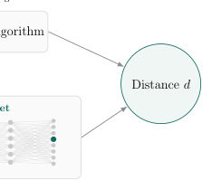
<figcaption class="paper-figure-caption"><b>Fig 1.</b> Figure 1: Distance estimation for bivariate bicycle codes through two approaches: computationally intensive heuristic search and orders of magnitude more efficient inference using BB-Net. Numbers refer to a full benchmark evaluation.</figcaption>
</figure>
<figure class="paper-figure-card">

<figcaption class="paper-figure-caption"><b>Fig 2.</b> Figure 2: BB-Net architecture. A BB code is processed by two encoders; The polynomial encoder applies self-attention to monomial tokens and is conditioned on the code parameters through FiLM layers. In parallel, the Tanner spectral encoder processes Fourier-character tokens using attention as well. Each branch produces a code latent representation, which is combined through a learned gated residual connection. The fused representation then passed to a classification head.</figcaption>
</figure>
<figure class="paper-figure-card">

<figcaption class="paper-figure-caption"><b>Fig 3.</b> Figure 3: BB-Net tokenization and embedding. A BB code specified by sparse polynomials A and B is mapped to two complementary representations: (i) polynomial tokens encode monomial supports on Zℓ× Zm with the type (A,B) indicator as a one-hot vector and the first eight Fourier harmonics, represented by sine and cosine components along each lattice dimension, yielding a 32-dimensional positional representation. (ii) Tanner spectral tokens encode the responses of the full polynomials at each group character χ using 18-dimensional character features. Learned CLS tokens are used as latent vector aggregators for the downstream classification task.</figcaption>
</figure>
<figure class="paper-figure-card">
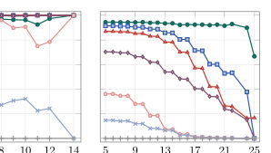
<figcaption class="paper-figure-caption"><b>Fig 4.</b> Figure 4: The x-axis denotes the minimum distance threshold t, and the y-axis reports the accuracy computed over codes whose distance satisfies d ≥t. Thus, moving to the right restricts the evalua- tion to increasingly high-distance codes. This was examined on three subsets: the whole benchmark, certified exact distances, and upper bound, unresolved distances.</figcaption>
</figure>
<figure class="paper-figure-card">

<figcaption class="paper-figure-caption"><b>Fig 5.</b> Figure 5: Bold curves denote the best configuration, including augmentation, shift canonicalisation, and FiLM conditioning; lighter curves show the corresponding model with the component named in each panel removed.</figcaption>
</figure>
</div>
<p><strong>Summary.</strong> This paper introduces BB-Net, an attention-based neural network designed to predict the minimum distance of quantum error-correcting codes, specifically BB codes. By encoding the code's algebraic structure using polynomial and spectral tokens, BB-Net bypasses the NP-hard computational barrier associated with exact distance calculation. This breakthrough significantly accelerates the screening process, aiding the discovery of novel, high-performance quantum codes.</p>
<p><strong>Why it may be interesting.</strong> This work directly addresses a critical bottleneck in the search for better quantum error-correcting codes, which is foundational for building scalable quantum computers.</p>
<details>
<summary>Detailed structure</summary>
<p><strong>Main problem.</strong> The core challenge is the computationally hard problem of determining the minimum distance ($d$) of quantum error-correcting codes, which dictates their fault-tolerance capability.</p>
<p><strong>Main result.</strong> The proposed neural network, BB-Net, achieves high accuracy in predicting code distances with a computational cost up to $10^4$ times lower than state-of-the-art heuristic solvers.</p>
<p><strong>Method.</strong> The authors developed BB-Net, an attention-based neural network that processes the algebraic structure of Bivariate Bicycle (BB) codes by combining polynomial and Tanner-spectral token representations.</p>
<p><strong>Model / system.</strong> The focus is on Quantum Error Correction (QEC) using stabilizer codes, specifically Bivariate Bicycle (BB) codes, which are analyzed through their parity-check matrices and algebraic structure.</p>
<p><strong>Key observables.</strong> The minimum distance ($d$) of the quantum code, defined as the minimum weight of a nontrivial logical operator.</p>
<p><strong>Important parameters / regimes.</strong> Code parameters ($\ell, m, n, k$), the computational budget (runtime), and the prediction accuracy (e.g., 96.39% on the test set).</p>
<p><strong>Assumptions / limitations.</strong> The method assumes the code structure can be effectively tokenized into local (polynomial) and global (spectral) representations, and that ML prediction can reliably substitute for exact, intractable computation.</p>
<p><strong>Figures summary.</strong> Figures compare distance estimation methods, showing the massive runtime difference between heuristic searches and BB-Net inference. Ablation studies (Figure 5) validate the necessity of the combined polynomial and spectral encoding branches.</p>
<p><strong>Paper structure.</strong> The paper first establishes the computational bottleneck of distance finding for QEC codes. It then details the novel BB-Net architecture, which tokenizes the code structure using polynomial and spectral encoders. Finally, it presents empirical results demonstrating the superior speed and accuracy of the ML prediction approach.</p>
</details>
<details>
<summary>Abstract</summary>
<p>The distance of a quantum code is a fundamental metric that dictates its error-correction capability. While quantum low-density parity-check (qLDPC) families such as Bivariate Bicycle (BB) codes offer a promising pathway to low-overhead fault-tolerant quantum computing, computing their distance is challenging. Current exact solvers and even search heuristics that provide a distance upper bound suffer from severe computational bottlenecks, restricting the discovery of optimal codes. In this paper, we construct a dataset of BB codes with corresponding distance upper bounds obtained through high-budget heuristic searches. We introduce BB-Net, an attention-based neural network architecture for predicting the distance of BB codes. It achieves 96.39% accuracy on the reference distances in the test set, compared with 94.86% for state-of-the-art heuristics with a budget of up to $10^{4}$ times more computational runtime. On a subset with certified exact distances, BB-Net achieves 98.94%. By relieving the distance-calculation bottleneck, BB-Net enables faster screening of large code spaces, particularly in ML-driven search pipelines, and thereby can accelerate the discovery of novel quantum error-correcting codes, an important capability for advancing scalable fault-tolerant quantum computing. Our code is publicly available: https://github.com/NadavSc/BBNet</p>
</details>
<p><sub><a href="#top">↑ back to top</a></sub></p>

<p><a id="paper-2610.17883"></a></p>
<h3 id="dynamics-of-low-energy-wave-packets-in-the-one-dimensional-quantum-heisenberg-ferromagnet"><a href="http://arxiv.org/abs/2610.17883v1">Dynamics of low energy wave packets in the one-dimensional quantum Heisenberg ferromagnet</a></h3>
<p><strong>Authors:</strong> Mateusz Kwaśnicki, Marcin Napiórkowski, Sören Petrat, Michał Pietruszka<br>
<strong>Type:</strong> theory · <strong>Category:</strong> other · <strong>PDF:</strong> <a href="https://arxiv.org/pdf/2610.17883v1">https://arxiv.org/pdf/2610.17883v1</a><br>
<strong>Analysis basis:</strong> full PDF text, analyzed in chunks</p>
<div class="figure-strip-hint">↔ Scroll figures horizontally</div>
<div class="paper-figures-scroll">
<figure class="paper-figure-card">

<figcaption class="paper-figure-caption"><b>Fig 1.</b> Low-resolution page preview, page 2</figcaption>
</figure>
<figure class="paper-figure-card">

<figcaption class="paper-figure-caption"><b>Fig 2.</b> Low-resolution page preview, page 3</figcaption>
</figure>
<figure class="paper-figure-card">

<figcaption class="paper-figure-caption"><b>Fig 3.</b> Low-resolution page preview, page 4</figcaption>
</figure>
<figure class="paper-figure-card">
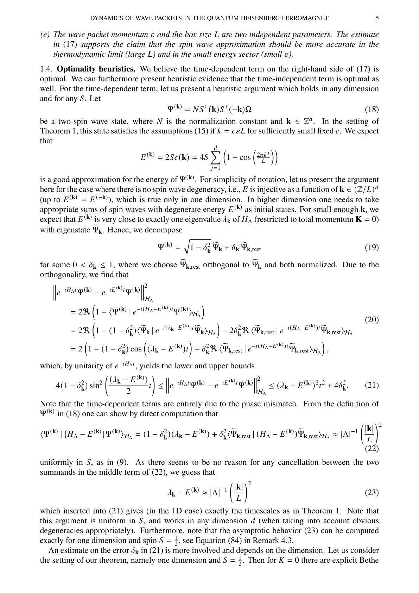
<figcaption class="paper-figure-caption"><b>Fig 4.</b> Low-resolution page preview, page 5</figcaption>
</figure>
<figure class="paper-figure-card">

<figcaption class="paper-figure-caption"><b>Fig 5.</b> Low-resolution page preview, page 6</figcaption>
</figure>
</div>
<p><strong>Summary.</strong> This theoretical paper rigorously justifies the use of spin-wave theory to model the quantum dynamics of low-energy excitations (magnons) in a 1D quantum Heisenberg ferromagnet. By comparing the exact time evolution to the free evolution, the authors derive quantitative error bounds, confirming that the approximation holds under specific conditions related to system size and momentum spread.</p>
<p><strong>Why it may be interesting.</strong> This work provides a rigorous, mathematically deep justification for a standard approximation (spin-wave theory) used extensively in condensed matter physics, which is crucial for understanding low-energy excitations in magnetic materials.</p>
<details>
<summary>Detailed structure</summary>
<p><strong>Main problem.</strong> The paper aims to rigorously justify the spin-wave approximation for describing the quantum dynamics of low-energy wave packets in the one-dimensional quantum Heisenberg ferromagnet.</p>
<p><strong>Main result.</strong> The authors establish a rigorous bound showing that the difference between the exact time evolution and the free evolution remains small for sufficiently large system sizes ($L \ge L_0$), confirming the validity of the approximation.</p>
<p><strong>Method.</strong> The analysis combines techniques from integrable systems and functional/harmonic analysis, comparing the full interacting time evolution to the free evolution using norm estimates.</p>
<p><strong>Model / system.</strong> The system is a one-dimensional quantum spin-1/2 Heisenberg ferromagnet on a lattice with periodic boundary conditions. The dynamics are governed by the Heisenberg Hamiltonian, and the focus is on two-magnon wave packets.</p>
<p><strong>Key observables.</strong> The primary observable is the norm distance between the exact time evolution ($\Psi_t^K$) and the free time evolution ($\Psi_{t, 	ext{free}}^K$): $||\Psi_t^K - \Psi_{t, 	ext{free}}^K||_{H_\Lambda}^2$.</p>
<p><strong>Important parameters / regimes.</strong> The analysis is performed in the limit of large system size ($L 	o \infty$) and for small momentum spread ($\epsilon > 0$).</p>
<p><strong>Assumptions / limitations.</strong> The result is restricted to $S=1/2$ and $d=1$, and the analysis focuses on wave packets with a fixed total momentum $P=2\pi K/L$.</p>
<p><strong>Paper structure.</strong> The paper progresses by first setting up the problem and the approximation, then deriving error bounds using spectral decomposition and asymptotic analysis of coupling terms ($\delta_k^2$), culminating in proving the uniform boundedness of key operators ($T$ and $T'$) using the properties of the Periodic Discrete Hilbert Transform.</p>
</details>
<details>
<summary>Abstract</summary>
<p>Spin wave theory plays a central role in the analysis of low-energy properties of the quantum ferromagnetic Heisenberg model. In this work, we present a first step towards a rigorous justification of this approximation in the context of quantum dynamics in one dimension. According to spin wave theory, the evolution of a spin wave state should be well approximated by its free evolution with the appropriate energy of free quasiparticles called magnons. Our main result establishes this idea rigorously for a class of spin wave packets. We focus on spin-$\frac{1}{2}$ systems, and consider wave packets composed of two magnons. We argue our result is optimal with respect to the timescales.</p>
</details>
<p><sub><a href="#top">↑ back to top</a></sub></p>

<p><a id="paper-2610.18626"></a></p>
<h3 id="exact-microscopic-one-body-reduction-in-the-symmetric-exclusion-process"><a href="http://arxiv.org/abs/2610.18626v1">Exact Microscopic One-Body Reduction in the Symmetric Exclusion Process</a></h3>
<p><strong>Authors:</strong> Olivier Bénichou, Aurélien Grabsch<br>
<strong>Type:</strong> theory · <strong>Category:</strong> statistical mechanics · <strong>PDF:</strong> <a href="https://arxiv.org/pdf/2610.18626v1">https://arxiv.org/pdf/2610.18626v1</a><br>
<strong>Analysis basis:</strong> full PDF text, analyzed in chunks</p>
<div class="figure-strip-hint">↔ Scroll figures horizontally</div>
<div class="paper-figures-scroll">
<figure class="paper-figure-card">

<figcaption class="paper-figure-caption"><b>Fig 1.</b> FIG. 1. Representation of the SEP as a stirring process [3]. At random times, picked with unit rate, two neighboring integers are exchanged (red arrows). A configuration of the SEP is obtained by filling the sites hosting a label that was initially occupied by a particle (blue). Note that exchanging the labels of two occupied sites yield the same SEP configuration.</figcaption>
</figure>
</div>
<p><strong>Summary.</strong> This theoretical paper solves a long-standing problem in non-equilibrium statistical mechanics concerning the Symmetric Exclusion Process (SEP). The authors demonstrate that the complex, infinite-body correlation hierarchy simplifies exactly at the microscopic level, not just in the continuum limit. This reduction maps the interacting system onto a solvable one-body random walker problem, providing exact finite-time correlation profiles.</p>
<p><strong>Why it may be interesting.</strong> The exact reduction of a complex interacting many-body system to a simple one-body problem provides a powerful, non-perturbative tool for calculating correlation functions in non-equilibrium statistical mechanics.</p>
<details>
<summary>Detailed structure</summary>
<p><strong>Main problem.</strong> The paper addresses the fundamental question of whether the known large-scale closure of the correlation hierarchy in the Symmetric Exclusion Process (SEP) is an emergent property of coarse-graining or an exact feature of the microscopic dynamics.</p>
<p><strong>Main result.</strong> The authors prove that the entire many-body hierarchy collapses exactly onto a single linear equation at arbitrary time, reducing the complex interacting system to an equivalent one-body problem governed by a single auxiliary random walker.</p>
<p><strong>Method.</strong> The analysis involves extending the Bethe-ansatz calculation using the stirring representation, deriving a closed linear equation for the correlation profile, and mapping this differential equation to a solvable renewal equation.</p>
<p><strong>Model / system.</strong> The system studied is the Symmetric Exclusion Process (SEP), a canonical model for interacting particle transport on a lattice where particles undergo symmetric random walks subject to hard-core exclusion.</p>
<p><strong>Key observables.</strong> The correlation profile $\omega_r(t; \lambda)$, which encodes spatial structure associated with current fluctuations, and the $n$-particle propagator $P^{(n)}_t$.</p>
<p><strong>Important parameters / regimes.</strong> The analysis covers both the finite-time, microscopic regime and the large-scale continuum limit, with the key parameter being time $t$.</p>
<p><strong>Assumptions / limitations.</strong> The derivation relies on adapting techniques from the Bethe ansatz and utilizing complex analysis methods like contour deformation and the Poisson transform.</p>
<p><strong>Figures summary.</strong> Figure 1 illustrates the SEP as a stirring process, which is central to the mathematical framework used for the derivation.</p>
<p><strong>Paper structure.</strong> The paper proceeds by establishing the correlation profile using determinantal formulas derived from the Bethe ansatz, demonstrating the exact microscopic closure equation, and finally showing that this equation reduces the many-body problem to a single random walker equivalent.</p>
</details>
<details>
<summary>Abstract</summary>
<p>The symmetric exclusion process (SEP) is a paradigmatic model of interacting particle transport. Its current--density correlations are governed by an infinite many-body hierarchy of equations. Only recently, this hierarchy was found to collapse at large scales onto a single closed equation. Is this remarkable simplification created by coarse graining, or does it reflect a deeper property already present in the microscopic dynamics? Here we show that the second scenario is realized. At arbitrary time on the lattice, the entire hierarchy collapses onto a single linear equation which is exactly equivalent to a persistence problem for a single auxiliary random walker. Thus an interacting many-body problem reduces exactly to a genuine one-body problem before any scaling limit is taken. This reduction determines the complete finite-time correlation profile, including during nonequilibrium relaxation. More broadly, the microscopic operator uncovered here opens a route to more general correlation functions in the SEP, and may point to a general organizing principle for nonequilibrium interacting particle systems.</p>
</details>
<p><sub><a href="#top">↑ back to top</a></sub></p>

<p><a id="paper-2610.17612"></a></p>
<h3 id="from-syndromes-to-computation-a-general-framework-for-logical-operations-in-quantum-error-correcting-codes"><a href="http://arxiv.org/abs/2610.17612v1">From Syndromes to Computation: A General Framework for Logical Operations in Quantum Error-Correcting Codes</a></h3>
<p><strong>Authors:</strong> Hunter Nelson, Arshag Danageozian, ChunJun Cao, Sophia E. Economou, Edwin Barnes<br>
<strong>Type:</strong> theory · <strong>Category:</strong> quantum information and computing · <strong>PDF:</strong> <a href="https://arxiv.org/pdf/2610.17612v1">https://arxiv.org/pdf/2610.17612v1</a><br>
<strong>Analysis basis:</strong> full PDF text, analyzed in chunks</p>
<div class="figure-strip-hint">↔ Scroll figures horizontally</div>
<div class="paper-figures-scroll">
<figure class="paper-figure-card">
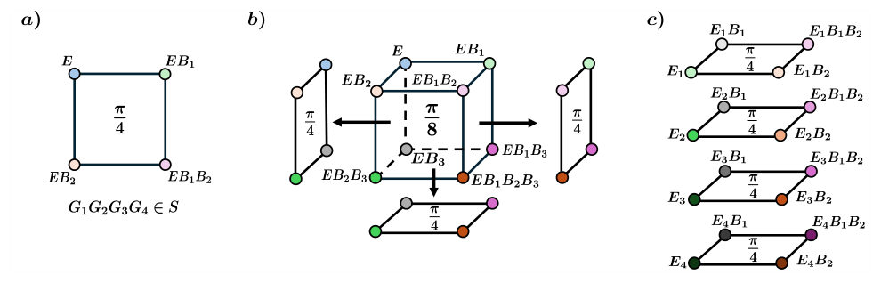
<figcaption class="paper-figure-caption"><b>Fig 1.</b> FIG. 1. Geometric organization of equal- and unequal-syndrome logical gates. Each vertex represents one Pauli-rotation generator, labeled by its logical Pauli content relative to the common syndrome-carrying reference E (or Eµ for each partition in panel c). Here B1, B2, . . . denote independent generators for commuting logical Pauli operators, whose products label the vertices of the logical square or cube. a) Four equal-syndrome Pauli generators form a rank-two logical square {E, EB1, EB2, EB1B2}. At angle π/4, the four Pauli generators multiply to a stabilizer up to a sign fixed by the rotation directions and implement a logical Clifford operation. b) Eight equal-syndrome Pauli...</figcaption>
</figure>
<figure class="paper-figure-card">
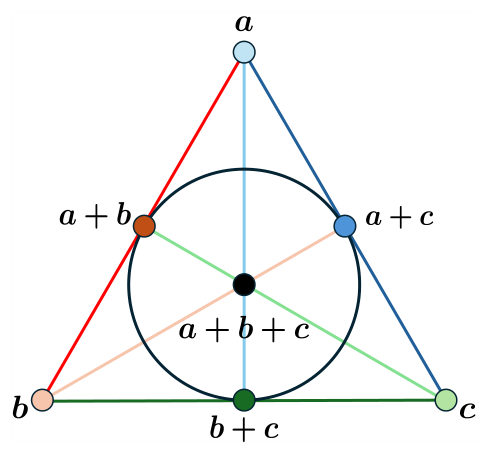
<figcaption class="paper-figure-caption"><b>Fig 2.</b> FIG. 2. Representation of the Pauli-root construction of a logical T-type gate as a Fano plane. Each point represents one equal-syndrome pair whose product is the same logical Pauli L. The seven points are the seven nonzero syndromes in a rank-three syndrome space. Each line contains a triple {u, v, u+v} and hence the three equal-syndrome pairs of one six-rotation phase gate S or S† construction. All seven points together give the seven pairs, or fourteen physical rotations, of the T-gate construction. For the direct T-gate identity all fourteen rotations may be taken with the same sign. If instead the gate is reconstructed from the seven overlapping S/S†</figcaption>
</figure>
<figure class="paper-figure-card">

<figcaption class="paper-figure-caption"><b>Fig 3.</b> FIG. 3. Visual representation of a CAB presentation. (a) A Clifford algebra basis Γ = {γ1, . . . , γ2n} provides binary coordinates for the Pauli group. (b) CAB indices are organized into pairwise-disjoint sets Ca. (c) The monomial on each set defines a stabilizer check, while quadratic monomials within the same set define a logical Pauli frame. Candidate syndrome-partition Pauli generators are expressed in the same index language, so their stabilizer syndromes and products can be read directly from CAB-index overlaps and symmetric differences.</figcaption>
</figure>
<figure class="paper-figure-card">

<figcaption class="paper-figure-caption"><b>Fig 4.</b> FIG. 5. The multi-source CNOT with logical qubits B, C, and D as controls and logical qubit A as their common target.</figcaption>
</figure>
<figure class="paper-figure-card">

<figcaption class="paper-figure-caption"><b>Fig 5.</b> FIG. 4. Logical action of the four-qubit complement gate written as a sequence of CNOT operations.</figcaption>
</figure>
</div>
<p><strong>Summary.</strong> This paper introduces a general framework that uses stabilizer syndromes to systematically design logical quantum gates in error-correcting codes. It unifies the construction of both Clifford and non-Clifford gates for various code types. The work provides explicit, low-weight gate constructions, establishing a powerful link between a code's mathematical structure and its practical computational capabilities.</p>
<p><strong>Why it may be interesting.</strong> While focused on abstract codes, the systematic link between stabilizer structure and implementable gates is crucial for designing physical quantum hardware architectures, which often involve engineered local interactions.</p>
<details>
<summary>Detailed structure</summary>
<p><strong>Main problem.</strong> The paper develops a general, systematic framework to design fault-tolerant logical quantum gates in error-correcting codes.</p>
<p><strong>Main result.</strong> It establishes stabilizer syndromes as a constructive link, allowing the derivation of explicit, low-weight logical Clifford and non-Clifford gates for various codes.</p>
<p><strong>Method.</strong> The framework uses the stabilizer syndromes of commuting Pauli rotations to derive an exact codespace-preservation condition applicable to both CSS and non-CSS codes.</p>
<p><strong>Model / system.</strong> The study focuses on Quantum Error-Correcting Codes (QECCs), including CSS, non-CSS, Bivariate-Bicycle (BB), and Mirror qLDPC codes. The goal is to implement logical operations (gates) while preserving the codespace.</p>
<p><strong>Key observables.</strong> Stabilizer syndromes, logical gate types (CNOT, T gate, CCZ-), and the Pauli-rotation partition distance.</p>
<p><strong>Important parameters / regimes.</strong> Code parameters like distance-$d$ and the derived generator weight bound of $\lceil d/2 \rceil$.</p>
<p><strong>Assumptions / limitations.</strong> The framework assumes that logical operations can be systematically derived from the stabilizer structure via Pauli rotations.</p>
<p><strong>Figures summary.</strong> The notes mention tables summarizing logical actions found in hypercube catalogs and grouping these actions by family, detailing the complexity of the required circuits.</p>
<p><strong>Paper structure.</strong> The paper progresses by first defining the general syndrome-stabilizer framework, then specializing it for Clifford gates (reducing to stabilizer factorization), and finally applying this to specific codes (BB, Mirror, hypercube) to yield explicit, low-weight gate constructions.</p>
</details>
<details>
<summary>Abstract</summary>
<p>Fault-tolerant quantum computation requires error-correcting codes that not only protect quantum information but also support useful logical operations with practical physical realizations. Here we develop a general framework in which the stabilizer syndromes of commuting Pauli rotations directly organize logical-gate design. We derive an exact codespace-preservation condition valid at arbitrary rotation angles, providing a common stabilizer-level description for CSS and non-CSS codes and for both Clifford and non-Clifford operations. A particularly useful equal-syndrome specialization reduces Clifford gate design to stabilizer factorization, yields a general generator weight bound of $\lceil d/2\rceil$ for distance-$d$ codes, and systematically extends to logical rotations higher in the Clifford hierarchy. Applied to bivariate-bicycle (BB) and non-CSS Mirror qLDPC codes, the framework gives explicit low-weight Clifford and controlled-phase gates. Our implementations yield new low-weight gates, including an addressed $T$ gate on the $[[16,4,4]]$ BB code, $T$-type rotations on the $[[64,8,8]]$ BB code, and CCZ-, CS-, and $T$-type operations on the $[[36,6,6]]$ Mirror code. We also develop analytic constructions using Clifford algebra bases, which turn the syndrome constraints into explicit algebraic relations and provide a systematic route to logical addressability. We use this approach to analytically construct addressed CNOT, SWAP, controlled, and CCZ-type gates on recursive hypercube codes. An independent construction on middle quantum Reed--Muller codes yields C${}^r$Z gates that saturate the equal-syndrome weight bound. These results establish stabilizer syndromes as a constructive link between the stabilizer structure of a quantum code, the logical computations it can directly support, and the fault-tolerance properties of their physical realizations.</p>
</details>
<p><sub><a href="#top">↑ back to top</a></sub></p>

<p><a id="paper-2610.18827"></a></p>
<h3 id="gaussian-entanglement-and-quantum-communication-geodesic-optimization-and-multimode-bounds"><a href="http://arxiv.org/abs/2610.18827v1">Gaussian entanglement and quantum communication: geodesic optimization and multimode bounds</a></h3>
<p><strong>Authors:</strong> Hemant K. Mishra, Mark M. Wilde<br>
<strong>Type:</strong> theory · <strong>Category:</strong> quantum information and computing · <strong>PDF:</strong> <a href="https://arxiv.org/pdf/2610.18827v1">https://arxiv.org/pdf/2610.18827v1</a><br>
<strong>Analysis basis:</strong> full PDF text, analyzed in chunks</p>
<div class="figure-strip-hint">↔ Scroll figures horizontally</div>
<div class="paper-figures-scroll">
<figure class="paper-figure-card">
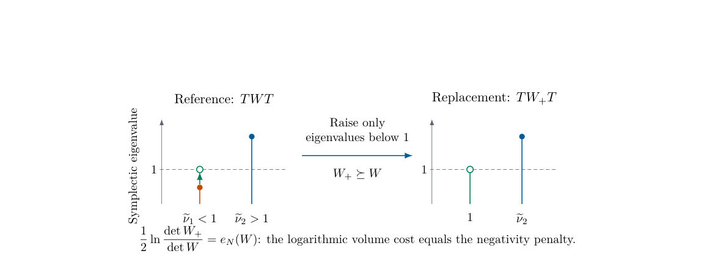
<figcaption class="paper-figure-caption"><b>Fig 1.</b> Figure 1: The reference replacement in Theorem 3.5, shown for two partially transposed symplectic eigenvalues. Only eigenvalues below the vacuum threshold are raised. The construction acts on covariance matrices in a proof; it is not a channel implementing partial transposition. The corresponding increase W+ −W ⪰0 is ordinary Gaussian displacement noise on the reference.</figcaption>
</figure>
<figure class="paper-figure-card">
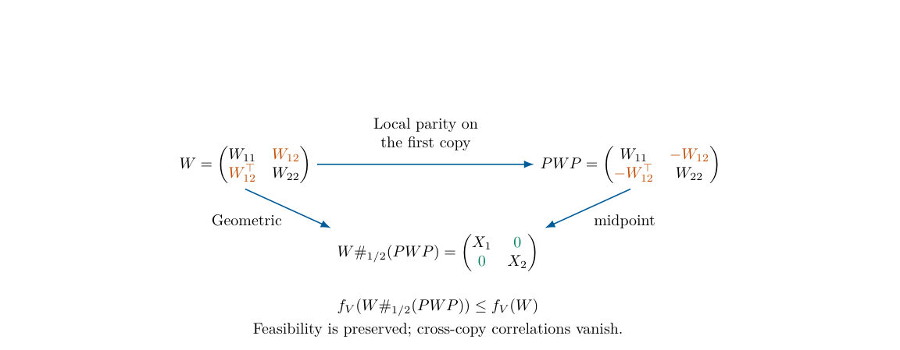
<figcaption class="paper-figure-caption"><b>Fig 2.</b> Figure 2: Geometric parity symmetrization for a product input covariance matrix V = V1 ⊕V2. Blocks here refer to the two copies, not to the two parties. Parity on the first copy is a local unitary across the grouped bipartition A1A2 : B1B2. The geometric midpoint is parity invariant and therefore has no cross-copy blocks. Its diagonal blocks X1, X2 need not equal W11, W22. This construction stays Gaussian and proves additivity without averaging Gaussian density operators.</figcaption>
</figure>
<figure class="paper-figure-card">

<figcaption class="paper-figure-caption"><b>Fig 3.</b> Figure 3: Classical computation of a Gaussian-reference entanglement bound. The two right-hand boxes implement one convex-majorization iteration; they do not represent quantum operations. The maintained scalar ¯ek is an upper bound on the unknown objective error ek, provided every inner error ζk includes quadrature, optimization, and rounding errors and the returned reference is feasible. The original unregularized value also requires the separate correction in (6.2). A certified inner objective gap, not an unverified solver termination flag, is required for the guarantee.</figcaption>
</figure>
<figure class="paper-figure-card">

<figcaption class="paper-figure-caption"><b>Fig 4.</b> Figure 4: A faithful separation at v = 1.01 within the family V (v, 0.3). The solid curve evaluates the Gaussian optimum from Theorem 7.3. The dashed line is the entropy of the pure input V (1, 0.3) and therefore an upper bound, not an exact curve, for both unrestricted measures at every v ≥1. The marked point is the analytic lower bound from (7.24); it lies above the dashed line. The endpoint v = 1 is pure, whereas every v &gt; 1 is faithful.</figcaption>
</figure>
<figure class="paper-figure-card">

<figcaption class="paper-figure-caption"><b>Fig 5.</b> Figure 4 compares the scalar Gaussian optimum with the rigorous unrestricted upper bound. The counterexample rules out a general Gaussian-optimality statement for the forward REE and for the Gaussian-reference Rains optimization. It does not determine the unrestricted values of this mixed state: the first line of (7.21) is an upper bound. It also does not contradict Gaussian optimality for reverse relative entropy of entanglement [RLAB26]. The position of the variable reference in relative entropy is essential.</figcaption>
</figure>
</div>
<p><strong>Summary.</strong> This paper develops a theoretical framework to calculate entanglement measures for Gaussian quantum states, crucial for understanding quantum communication over noisy channels. By using integral representations and convex optimization, the authors derive explicit bounds on extractable entanglement and secret key rates. This advances the understanding of resource limitations in photonic quantum information processing.</p>
<p><strong>Why it may be interesting.</strong> This work provides rigorous, computationally tractable bounds for fundamental quantum information tasks (like key distribution and entanglement distillation) in the context of noisy, lossy photonic channels, which is highly relevant to quantum optics and quantum information theory.</p>
<details>
<summary>Detailed structure</summary>
<p><strong>Main problem.</strong> The paper develops methods to compute Gaussian-restricted versions of entanglement measures, like relative entropy of entanglement and Rains entanglement, to bound quantum communication rates.</p>
<p><strong>Main result.</strong> It establishes identities such as Gaussian Rains entanglement equaling Gaussian PPT relative entropy and provides explicit bounds for extractable entanglement and secret key rates under energy constraints.</p>
<p><strong>Method.</strong> The authors use integral representations derived from convex geometry and employ a convex-majorization algorithm to compute these bounds numerically.</p>
<p><strong>Model / system.</strong> The focus is on bosonic Gaussian states, which are compactly described by means and covariance matrices, relevant for quantum information transmission using light.</p>
<p><strong>Key observables.</strong> Relative entropy of entanglement (REE), Rains entanglement, extractable entanglement, and secret key rates.</p>
<p><strong>Important parameters / regimes.</strong> Input-energy constraint, covariance matrices (V and W), and the accuracy bits for numerical computation.</p>
<p><strong>Assumptions / limitations.</strong> The calculations provide Gaussian-restricted bounds, which are upper bounds compared to the unrestricted entanglement measures.</p>
<p><strong>Figures summary.</strong> The notes do not provide a summary of figures, but mention comparisons between derived bounds and achievable rates for two- and three-mode examples.</p>
<p><strong>Paper structure.</strong> The paper builds from deriving an integral representation for relative entropy, proving key equalities between Gaussian entanglement measures, developing the convex optimization framework, and finally applying these bounds to energy-constrained communication protocols.</p>
</details>
<details>
<summary>Abstract</summary>
<p>Loss and noise limit the use of light to distribute entanglement, transmit quantum information, and establish secret keys. Gaussian states have a compact description in terms of means and covariance matrices, but their entanglement still requires global optimization. We develop a framework for computing Gaussian-restricted versions of the relative entropy of entanglement and Rains entanglement. An integral representation reveals a convex geometry under matrix geometric means and reduces Gaussian Rains entanglement to relative entropy minimized over Gaussian states with positive partial transpose. We obtain unique optimal reference states and additivity for independent Gaussian input states. Our convex-majorization algorithm has an explicit geometric convergence rate, uniform in the faithful regularization parameter and valid for pure input states. Controlled numerical integration and approximate convex subproblem solutions give a bit-complexity bound that is polynomial in accuracy bits for each fixed rational input covariance matrix, with explicit dependence on covariance size. These calculations bound extractable entanglement and, through the relative entropy of entanglement, extractable secret key. Teleportation simulation, energy allocation, and a convex optimization of passive-basis loss cores give bounds on quantum and private communication under an input-energy constraint, allowing arbitrary two-way classically assisted protocols. Two- and three-mode examples compare the bounds with achievable rates, including matching pure-loss benchmarks. Finally, we separate the Gaussian-restricted quantities from their unrestricted counterparts and give a photon-number truncation method with controlled error for computing the latter.</p>
</details>
<p><sub><a href="#top">↑ back to top</a></sub></p>

<p><a id="paper-2610.17826"></a></p>
<h3 id="how-many-switches-does-two-hamiltonian-universality-require"><a href="http://arxiv.org/abs/2610.17826v1">How many switches does two-Hamiltonian universality require?</a></h3>
<p><strong>Authors:</strong> Matas Garbaravičius, Michael M. Wolf<br>
<strong>Type:</strong> theory · <strong>Category:</strong> quantum information and computing · <strong>PDF:</strong> <a href="https://arxiv.org/pdf/2610.17826v1">https://arxiv.org/pdf/2610.17826v1</a><br>
<strong>Analysis basis:</strong> full PDF text, analyzed in chunks</p>
<div class="figure-strip-hint">↔ Scroll figures horizontally</div>
<div class="paper-figures-scroll">
<figure class="paper-figure-card">

<figcaption class="paper-figure-caption"><b>Fig 1.</b> Low-resolution page preview, page 2</figcaption>
</figure>
<figure class="paper-figure-card">
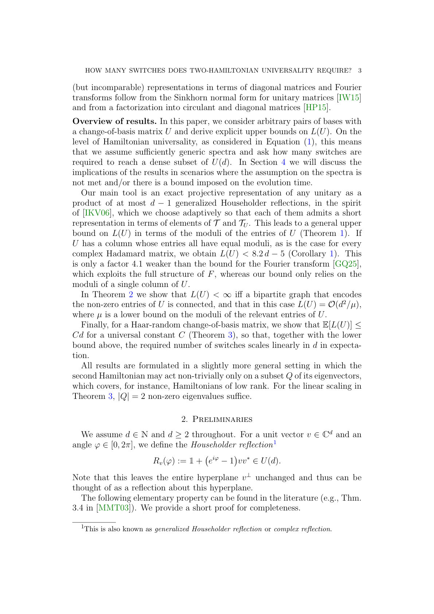
<figcaption class="paper-figure-caption"><b>Fig 2.</b> Low-resolution page preview, page 3</figcaption>
</figure>
<figure class="paper-figure-card">
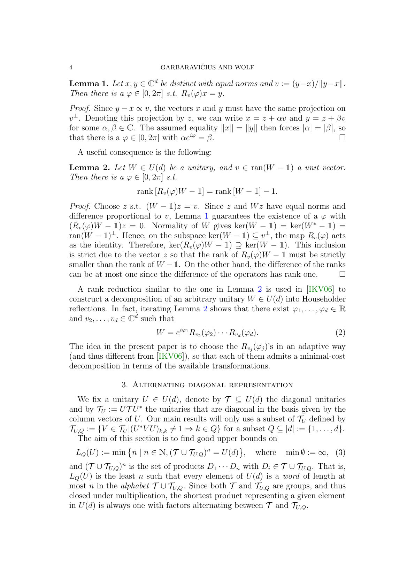
<figcaption class="paper-figure-caption"><b>Fig 3.</b> Low-resolution page preview, page 4</figcaption>
</figure>
<figure class="paper-figure-card">

<figcaption class="paper-figure-caption"><b>Fig 4.</b> Low-resolution page preview, page 5</figcaption>
</figure>
<figure class="paper-figure-card">

<figcaption class="paper-figure-caption"><b>Fig 5.</b> Low-resolution page preview, page 6</figcaption>
</figure>
</div>
<p><strong>Summary.</strong> This paper rigorously analyzes the problem of quantum control, specifically determining the minimum number of alternating Hamiltonian evolutions needed to approximate any desired unitary transformation in a $d$-dimensional system. It establishes that this number scales linearly with dimension for generic systems and provides explicit, quantifiable upper bounds for the required switches and evolution times.</p>
<p><strong>Why it may be interesting.</strong> This work provides rigorous mathematical tools for understanding the fundamental limits of quantum control, which is crucial for designing quantum gates and implementing quantum algorithms using limited physical resources (i.e., only two available controls).</p>
<details>
<summary>Detailed structure</summary>
<p><strong>Main problem.</strong> The paper determines the minimal number of switches required to synthesize an arbitrary unitary evolution $W \in U(d)$ by alternating between two fixed Hamiltonian evolutions, $e^{it_1 H_1} e^{it_2 H_2} \cdots$.</p>
<p><strong>Main result.</strong> For generic spectra, the required number of switches scales linearly with the dimension $d$, and explicit upper bounds are derived based on the structure of the change-of-basis matrix.</p>
<p><strong>Method.</strong> The analysis uses group theory and Lie theory concepts, relating the Hamiltonian universality problem to the representation of unitaries as products of diagonal unitaries in two different bases.</p>
<p><strong>Model / system.</strong> The model is quantum control on a $d$-dimensional Hilbert space ($\mathbb{C}^d$), where the dynamics are governed by two Hamiltonians, $H_1$ and $H_2$. The goal is to approximate the full unitary group $U(d)$ using alternating time evolution steps.</p>
<p><strong>Key observables.</strong> The minimal number of switches ($\ell$ or $n$), the approximation error ($\|W - V\|$ in operator norm), and the required evolution times ($T, T'$).</p>
<p><strong>Important parameters / regimes.</strong> System dimension ($d$), the structure of the Hamiltonians ($H_1, H_2$), and the spectral properties (linear independence over $\mathbb{Q}$) of their eigenvalues.</p>
<p><strong>Assumptions / limitations.</strong> The initial results assume 'sufficiently generic' spectra; later theorems provide rigorous bounds by assuming positive spectral gaps ($\delta_M > 0$) to achieve arbitrary accuracy.</p>
<p><strong>Paper structure.</strong> The paper progresses from establishing the general problem of Hamiltonian universality to deriving structural bounds ($    ext{LQ}(U)$) based on spectral properties, and finally providing explicit, quantifiable upper bounds on the number of switches and required time scales for achieving high-accuracy approximation of any target unitary.</p>
</details>
<details>
<summary>Abstract</summary>
<p>Any pair of sufficiently generic Hamiltonians on $\mathbb{C}^d$ generates the full unitary group, i.e., any $W\in U(d)$ can be synthesized to arbitrary precision by alternating between the two evolutions for suitably chosen durations. For any given pair of Hamiltonians, the minimal number of switches required to cover the entire group is at least $d$ and unbounded in general. Despite this, we show that it scales linearly in $d$ in expectation. Assuming that the two spectra are sufficiently generic, we derive constructive upper bounds on the minimal switching number as a function of the change-of-basis matrix between the two eigenbases. In particular, if this matrix has a column whose entries all have equal moduli, as for a complex Hadamard matrix, then $9d$ switches suffice to reach every unitary. To obtain these results, we construct a short exact representation of any unitary as a product of unitaries that are alternately diagonal in two given bases. All bounds are extended to non-generic spectra and bounded evolution times.</p>
</details>
<p><sub><a href="#top">↑ back to top</a></sub></p>

<p><a id="paper-2610.18029"></a></p>
<h3 id="lossless-reductions-and-hybrid-sampling-for-phylogeny-using-the-maximum-compatibility-criterion"><a href="http://arxiv.org/abs/2610.18029v1">Lossless Reductions and Hybrid Sampling for Phylogeny Using the Maximum Compatibility Criterion</a></h3>
<p><strong>Authors:</strong> Orson Ye, James Bonfield, Joshua Cudby, Richard Durbin, Sergii Strelchuk<br>
<strong>Type:</strong> theory · <strong>Category:</strong> other · <strong>PDF:</strong> <a href="https://arxiv.org/pdf/2610.18029v1">https://arxiv.org/pdf/2610.18029v1</a><br>
<strong>Analysis basis:</strong> full PDF text, analyzed in chunks</p>
<div class="figure-strip-hint">↔ Scroll figures horizontally</div>
<div class="paper-figures-scroll">
<figure class="paper-figure-card">

<figcaption class="paper-figure-caption"><b>Fig 1.</b> Figure 1: Benchmarks of exact maximum clique solvers, IncMaxCLQ and CliSAT. The results derived from graphs taken from random subsets of size 100 to 20,000 sequences in increments of 50. Times are the total execution time.</figcaption>
</figure>
<figure class="paper-figure-card">

<figcaption class="paper-figure-caption"><b>Fig 2.</b> Figure 1 shows the time taken as a function of the number of nodes in the graph. Both CliSAT and IncMaxCLQ show a polynomial base-line for CPU growth, which can cover the bulk of the execution runs. However there are outliers which are expected to follow an exponential CPU growth. The tools can be ran with a fixed time limit, returning the best result found within that time.</figcaption>
</figure>
<figure class="paper-figure-card">

<figcaption class="paper-figure-caption"><b>Fig 3.</b> Figure 2: Benchmarks of the approximate solver SCCWalk4L. This returns a single clique after a time limit of 1000s. Colours represent the quality of result, showing perfect maximum cliques, imperfect cliques found with at least 99% of the maximum clique size, and cliques found below 99%. Times shown are the time to find the best solution, which is typically considerably less than the fixed specified execution time.</figcaption>
</figure>
<figure class="paper-figure-card">

<figcaption class="paper-figure-caption"><b>Fig 4.</b> Figure 3: Scatter plots of the depth and gate count against number of qubits of the QAOA circuits required to solve the MWC problem on various subsets of SARS-CoV-2 genome samples.</figcaption>
</figure>
<figure class="paper-figure-card">

<figcaption class="paper-figure-caption"><b>Fig 5.</b> Figure 4: For different Lagrange multipliers, the low energy solutions correspond to different subgraphs. Taking different fractions of the lowest energies, we show what proportions of the corresponding subgraphs correspond to MWCs given our postprocessing algorithm.</figcaption>
</figure>
</div>
<p><strong>Summary.</strong> This paper enhances phylogenetic reconstruction by tackling the Maximum Weight Clique enumeration problem using a hybrid quantum-classical approach. It combines graph reduction techniques with bespoke Quantum Approximate Optimization Algorithm (QAOA) instances to efficiently find the entire set of optimal character sets. This method is demonstrated on SARS-CoV-2 data, highlighting the utility of combining structural simplification with quantum sampling for complex combinatorial problems.</p>
<p><strong>Why it may be interesting.</strong> While the primary focus is bioinformatics/graph theory, the explicit construction and benchmarking of QAOA instances for an NP-hard enumeration problem, and the discussion of quantum sampling fidelity on noisy devices, touches upon quantum algorithm design and resource estimation.</p>
<details>
<summary>Detailed structure</summary>
<p><strong>Main problem.</strong> The paper addresses the computationally hard problem of phylogenetic reconstruction using the Maximum Compatibility Criterion, which translates to finding the Maximum Weight Clique (MWC) in a compatibility graph.</p>
<p><strong>Main result.</strong> The authors propose a hybrid approach combining graph reduction techniques with quantum sampling (QAOA) to tackle the enumeration bottleneck of finding all optimal solutions, outperforming single-solution finding methods.</p>
<p><strong>Method.</strong> The methodology involves formulating the problem as finding an MWC, applying graph reduction rules to simplify the input graph, and utilizing bespoke QAOA instances for quantum sampling alongside classical deterministic postprocessing.</p>
<p><strong>Model / system.</strong> The model is phylogenetic inference applied to multiple sequence alignments (e.g., SARS-CoV-2 sequences). The core mathematical structure is the weighted graph where vertices are characters and edges represent compatibility.</p>
<p><strong>Key observables.</strong> Execution time (s), number of nodes, graph density, and the ability to enumerate the complete set of optimal (maximum weight) cliques.</p>
<p><strong>Important parameters / regimes.</strong> The size of the graph (nodes/edges), the required fidelity of the solution (finding one optimum vs. enumerating all optima), and the choice of Lagrange multipliers for QAOA.</p>
<p><strong>Assumptions / limitations.</strong> The necessity of enumerating <em>all</em> optimal solutions, rather than just finding one, is a key assumption differentiating this work from standard optimization benchmarks. The quantum sampling is treated as a component, not a full replacement for classical methods.</p>
<p><strong>Figures summary.</strong> Figures benchmark various clique-finding solvers (IncMaxCLQ, CliSAT, FastWCLQ2, SCCWalk4L, AClique) showing time taken versus clique quality for varying graph sizes.</p>
<p><strong>Paper structure.</strong> The paper progresses from defining the MWC problem in phylogeny, detailing classical graph reduction techniques, proposing the hybrid quantum-classical solver, benchmarking the solvers, and finally applying the methods to real-world sequence data like SARS-CoV-2.</p>
</details>
<details>
<summary>Abstract</summary>
<p>Maximum compatibility provides a criterion for phylogenetic reconstruction in which the objective is to retain a maximum set of mutually compatible characters. For binary characters, pairwise compatibility can be represented by a weighted graph whose vertices correspond to characters and whose edges connect compatible pairs. A leading algorithm by Cherry [BMC Bioinformatics, 18(1):127, 2017] uses this representation to identify maximum compatible character sets as maximum weight cliques.   We formulate the problem as maximum weight independent set enumeration on the complement graph and use deterministic postprocessing to map sampled bit strings to maximal feasible solutions. To explore the prospects of quantum computational advantage, we further construct bespoke correction-in-the-loop Quantum Approximate Optimisation Algorithm instances and find that traditional Lagrange multiplier choices may not be optimal for the enumeration problem on noisy devices.   We also introduce lossless graph reductions with reconstruction rules that preserve the complete set of optimal solutions. Our results indicate that graph reduction and sampling can be effectively combined to address the enumeration bottleneck in maximum compatibility phylogeny, while retaining exact reconstruction when the residual optimum set is completely resolved.   We enhance Cherry's approach to maximum compatibility by introducing graph reduction techniques and quantum sampling. Our classical benchmarks show a clear difference between finding one optimum and recovering the optimum set in practice. We demonstrate the utility of our methods on graphs constructed from SARS-CoV-2 sequences.</p>
</details>
<p><sub><a href="#top">↑ back to top</a></sub></p>

<p><a id="paper-2610.18218"></a></p>
<h3 id="methods-for-automated-equivalence-checking-of-quantum-error-correction-codes"><a href="http://arxiv.org/abs/2610.18218v1">Methods for Automated Equivalence Checking of Quantum Error-Correction Codes</a></h3>
<p><strong>Authors:</strong> Maxie Bichmann, Ludwig Schmid, Robert Wille<br>
<strong>Type:</strong> theory · <strong>Category:</strong> quantum information and computing · <strong>PDF:</strong> <a href="https://arxiv.org/pdf/2610.18218v1">https://arxiv.org/pdf/2610.18218v1</a><br>
<strong>Analysis basis:</strong> full PDF text, analyzed in chunks</p>
<div class="figure-strip-hint">↔ Scroll figures horizontally</div>
<div class="paper-figures-scroll">
<figure class="paper-figure-card">
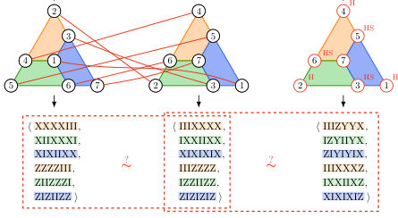
<figcaption class="paper-figure-caption"><b>Fig 1.</b> Figure 1: Three realizations of the Steane code: the original construction (center) and variants with rela- beled qubits (left) or additional local Cliffords (right).</figcaption>
</figure>
<figure class="paper-figure-card">
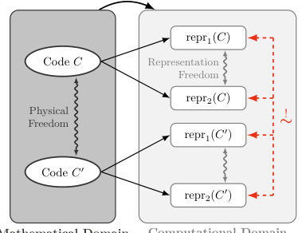
<figcaption class="paper-figure-caption"><b>Fig 2.</b> Figure 2: Representation freedom (light gray) relates encodings of the same code; physical freedom (dark gray) relates equivalent codes. A checker must recog- nize their combined equivalence relation (red).</figcaption>
</figure>
<figure class="paper-figure-card">

<figcaption class="paper-figure-caption"><b>Fig 3.</b> Figure 4: Encoding map V : H⊗k →H⊗n and its precomposition with a logical Clifford U have the same image C, but yield different logical frameworks.</figcaption>
</figure>
<figure class="paper-figure-card">
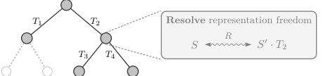
<figcaption class="paper-figure-caption"><b>Fig 4.</b> Figure 6: Traversal of the physical transformation space (dashed branches superfluous, skipped), resolving the representation freedom at each visited transforma- tion.</figcaption>
</figure>
<figure class="paper-figure-card">
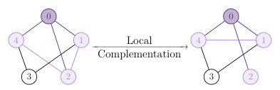
<figcaption class="paper-figure-caption"><b>Fig 5.</b> Figure 7: Local complementation at node 0: com- plementing the subgraph induced by its neighborhood (light lilac).</figcaption>
</figure>
</div>
<p><strong>Summary.</strong> This work develops automated tools to check the equivalence of quantum error-correcting codes under transformations like qubit permutation or local Clifford operations. By combining group-action search, isomorphism techniques, and constraint solving, the authors create a robust, hybrid checker. This advances the field by providing practical, scalable methods to manage the inherent representation freedom in quantum code descriptions.</p>
<p><strong>Why it may be interesting.</strong> While focused on abstract coding theory, the need to automate the comparison of complex, high-dimensional structures (like code generators) using hybrid computational methods is relevant to characterizing quantum states or Hamiltonians derived from physical models.</p>
<details>
<summary>Detailed structure</summary>
<p><strong>Main problem.</strong> The paper addresses the challenge of automatically determining if two mathematical descriptions of Quantum Error-Correction (QEC) codes are equivalent under various physical and representation transformations.</p>
<p><strong>Main result.</strong> The authors developed hybrid checkers combining group-action search, isomorphism methods, and constraint solving, achieving practical runtimes for structured codes while demonstrating that no single algorithmic paradigm is universally superior.</p>
<p><strong>Method.</strong> They formalize equivalence notions (permutation and local-Clifford) within a unified framework and combine three distinct algorithmic strategies into a staged Refute-Refine-Decide architecture.</p>
<p><strong>Model / system.</strong> The focus is on Quantum Error-Correction Codes (QECCs), specifically stabilizer and CSS codes, which are analyzed using their binary symplectic representations (symplectic tableaux). The ambiguity arises from both physical transformations (like qubit relabeling) and representation choices.</p>
<p><strong>Key observables.</strong> Mean runtimes for equivalence checking, the fraction of distinguished qubit pairs ($ar{q}$), and the number of SAT solver decisions required for refutation.</p>
<p><strong>Important parameters / regimes.</strong> Code length ($n$), stabilizer rank ($r$), and the specific equivalence notion (permutation vs. local-Clifford).</p>
<p><strong>Assumptions / limitations.</strong> The analysis relies on the ability to map codes to algebraic structures (symplectic tableaux) and assumes the applicability of linear algebra techniques for constraint solving.</p>
<p><strong>Figures summary.</strong> Figures illustrate the ambiguity requiring checking (e.g., Steane code realizations), the separation of physical vs. representation freedom, and runtime comparisons between different encoding methods (Full-Group vs. Matroid-Circuit).</p>
<p><strong>Paper structure.</strong> The paper establishes the problem by defining the degrees of freedom (physical vs. representation), develops and compares three distinct algorithmic strategies (group-action, isomorphism, constraint solving), and concludes by proposing a hybrid, staged checker architecture with empirical performance evaluation.</p>
</details>
<details>
<summary>Abstract</summary>
<p>Quantum error-correction code and circuit construction is an active field of research, motivating automated methods for identifying equivalent designs. We develop and evaluate automated strategies for deciding whether two descriptions of quantum error-correction codes are equivalent under specified transformations. We formalize permutation equivalence for stabilizer and CSS codes and local-Clifford equivalence for stabilizer codes within a unified framework that separates physical from representation freedom. We develop three decision strategies (group-action search, isomorphism-based methods, and constraint solving), together with invariants and signatures for preprocessing. The empirical evaluation shows that no paradigm dominates across equivalence notions, code families, and parameter ranges. We therefore combine their complementary strengths in input-dependent hybrid checkers following a staged Refute-Refine-Decide architecture. Mean hybrid runtimes remain below 10 s for most evaluated structured-code cases with $n \leq 37$; for inequivalent code instances with $n=144$, they are about 310 s for permutation and 16 s for local-Clifford equivalence.</p>
</details>
<p><sub><a href="#top">↑ back to top</a></sub></p>

<p><a id="paper-2610.17454"></a></p>
<h3 id="norm-properties-of-quantum-uniformity-measures"><a href="http://arxiv.org/abs/2610.17454v1">Norm properties of quantum uniformity measures</a></h3>
<p><strong>Authors:</strong> Berke Ünal<br>
<strong>Type:</strong> theory · <strong>Category:</strong> other · <strong>PDF:</strong> <a href="https://arxiv.org/pdf/2610.17454v1">https://arxiv.org/pdf/2610.17454v1</a><br>
<strong>Analysis basis:</strong> full PDF text, analyzed in chunks</p>
<div class="figure-strip-hint">↔ Scroll figures horizontally</div>
<div class="paper-figures-scroll">
<figure class="paper-figure-card">
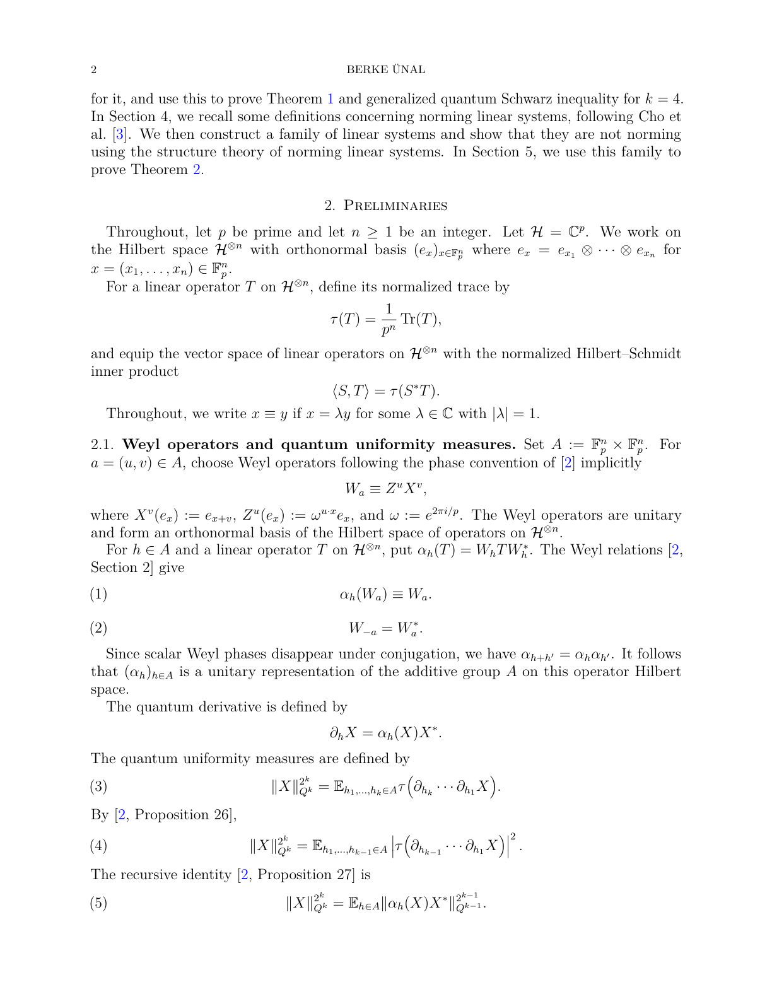
<figcaption class="paper-figure-caption"><b>Fig 1.</b> Low-resolution page preview, page 2</figcaption>
</figure>
<figure class="paper-figure-card">
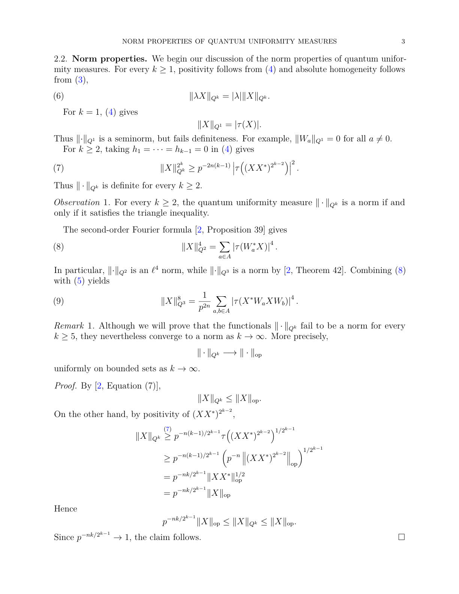
<figcaption class="paper-figure-caption"><b>Fig 2.</b> Low-resolution page preview, page 3</figcaption>
</figure>
<figure class="paper-figure-card">

<figcaption class="paper-figure-caption"><b>Fig 3.</b> Low-resolution page preview, page 4</figcaption>
</figure>
<figure class="paper-figure-card">
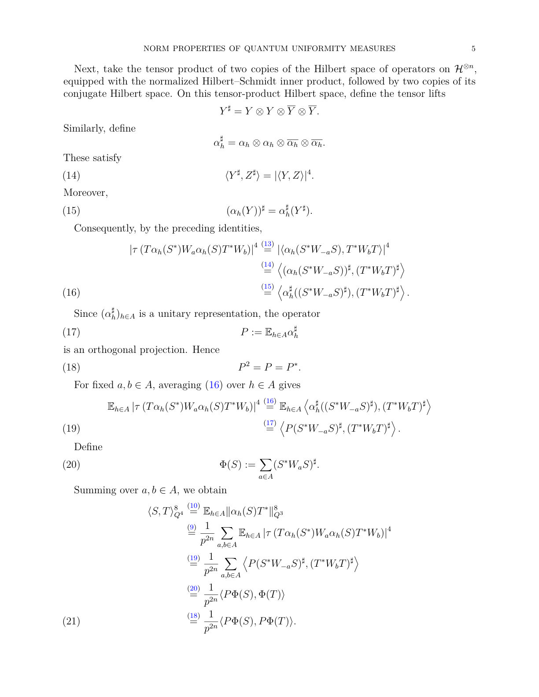
<figcaption class="paper-figure-caption"><b>Fig 4.</b> Low-resolution page preview, page 5</figcaption>
</figure>
<figure class="paper-figure-card">

<figcaption class="paper-figure-caption"><b>Fig 5.</b> Low-resolution page preview, page 6</figcaption>
</figure>
</div>
<p><strong>Summary.</strong> This paper rigorously determines the mathematical nature of quantum uniformity measures ($\lVert \cdot 
Vert_{Qk}$). It proves that these measures satisfy the triangle inequality (i.e., are norms) only for $k=2, 3,$ and $4$. For $k \geq 5$, the failure of the triangle inequality is demonstrated using advanced techniques involving finite field linear algebra.</p>
<p><strong>Why it may be interesting.</strong> While the core topic is abstract functional analysis applied to quantum operators, the failure of fundamental properties like the triangle inequality for higher-order quantum measures signals deep structural limitations in how these measures relate to standard physical norms.</p>
<details>
<summary>Detailed structure</summary>
<p><strong>Main problem.</strong> The paper investigates the mathematical properties, specifically the triangle inequality, of quantum uniformity measures ($\lVert \cdot 
Vert_{Qk}$) associated with the Clifford hierarchy.</p>
<p><strong>Main result.</strong> The quantum uniformity measure $\lVert \cdot 
Vert_{Qk}$ is proven to be a norm for $k=2, 3, 4$, but the triangle inequality fails for all $k \geq 5$.</p>
<p><strong>Method.</strong> The proof combines techniques from functional analysis (Cauchy-Schwarz inequality in Bochner spaces) for the $k=4$ case, and algebraic methods involving linear systems over finite fields for the failure case ($k \geq 5$).</p>
<p><strong>Model / system.</strong> The analysis is performed on linear operators acting on tensor products of a Hilbert space $H = \mathbb{C}^p$, related to the Clifford hierarchy and quantum Fourier analysis.</p>
<p><strong>Key observables.</strong> Quantum uniformity measures ($\lVert \cdot 
Vert_{Qk}$) and the associated quantum uniformity pairing ($\langle \cdot, \cdot 
angle_{Q4}$).</p>
<p><strong>Important parameters / regimes.</strong> The integer $k$, which dictates the specific quantum uniformity measure being analyzed ($k=4$ is the critical case).</p>
<p><strong>Assumptions / limitations.</strong> The analysis assumes the existence of a connection between the quantum uniformity norm and an analogous classical norm defined on linear systems over finite fields.</p>
<p><strong>Figures summary.</strong> Not specified.</p>
<p><strong>Paper structure.</strong> The paper first establishes the norm property for $k=4$ using Cauchy-Schwarz and Bochner spaces. It then proves the failure of the triangle inequality for $k \geq 5$ by constructing a contradiction using linear systems over finite fields, linking the quantum failure to a failure in the classical analogue.</p>
</details>
<details>
<summary>Abstract</summary>
<p>We prove that for $k=4$ the quantum uniformity measures are norms, whereas for every $k\geq5$ the triangle inequality fails. This gives a complete answer to an open question of Bu, Gu, and Jaffe. The $k=4$ case is proved using the Cauchy--Schwarz inequality for the quantum uniformity pairing $\langle\cdot,\cdot\rangle_{Q^4}$ introduced here, together with the triangle inequality in a suitable finite-dimensional Bochner $L^8$ space. For $k\geq5$, we construct systems of linear equations over a finite field and derive a contradiction from the structure theory of norming linear systems.</p>
</details>
<p><sub><a href="#top">↑ back to top</a></sub></p>

<p><a id="paper-2610.18816"></a></p>
<h3 id="on-the-coincidence-of-discrete-and-continuous-definitions-of-entanglement-of-formation"><a href="http://arxiv.org/abs/2610.18816v1">On the coincidence of discrete and continuous definitions of Entanglement of Formation</a></h3>
<p><strong>Authors:</strong> Haobo Ma, Maksim E. Shirokov, Wenlin Zhang<br>
<strong>Type:</strong> theory · <strong>Category:</strong> quantum information and computing · <strong>PDF:</strong> <a href="https://arxiv.org/pdf/2610.18816v1">https://arxiv.org/pdf/2610.18816v1</a><br>
<strong>Analysis basis:</strong> full PDF text, analyzed in chunks</p>
<div class="figure-strip-hint">↔ Scroll figures horizontally</div>
<div class="paper-figures-scroll">
<figure class="paper-figure-card">

<figcaption class="paper-figure-caption"><b>Fig 1.</b> Low-resolution page preview, page 2</figcaption>
</figure>
<figure class="paper-figure-card">

<figcaption class="paper-figure-caption"><b>Fig 2.</b> Low-resolution page preview, page 3</figcaption>
</figure>
<figure class="paper-figure-card">

<figcaption class="paper-figure-caption"><b>Fig 3.</b> Low-resolution page preview, page 4</figcaption>
</figure>
<figure class="paper-figure-card">
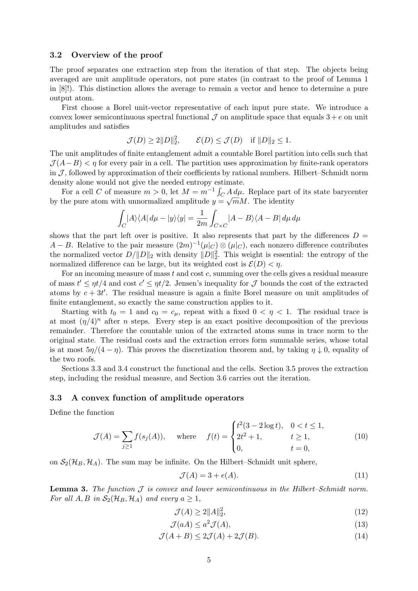
<figcaption class="paper-figure-caption"><b>Fig 4.</b> Low-resolution page preview, page 5</figcaption>
</figure>
<figure class="paper-figure-card">
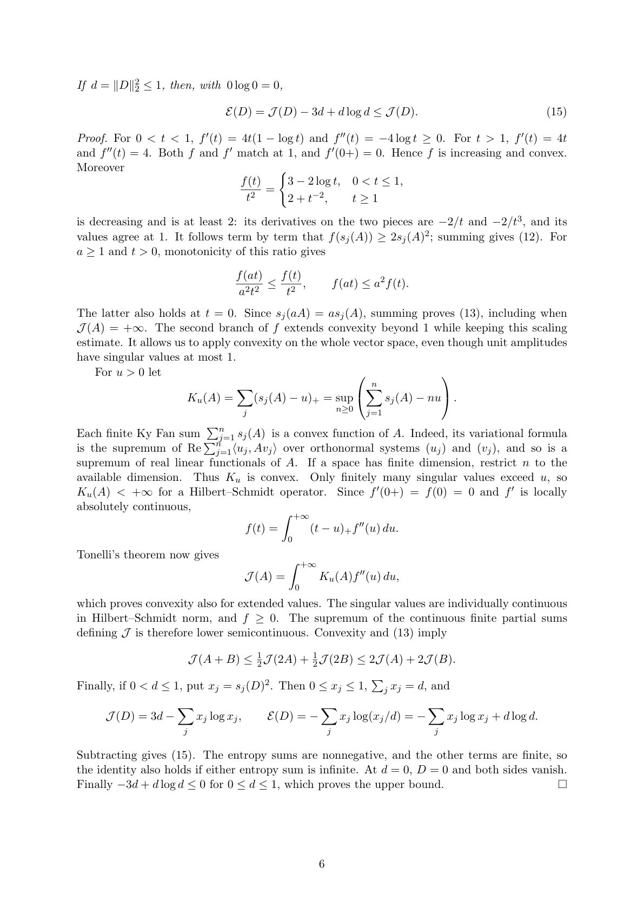
<figcaption class="paper-figure-caption"><b>Fig 5.</b> Low-resolution page preview, page 6</figcaption>
</figure>
</div>
<p><strong>Summary.</strong> This paper rigorously proves that the discrete and continuous definitions of the Entanglement of Formation coincide for all bipartite quantum states in infinite dimensions. The core mathematical technique involves demonstrating that any continuous ensemble can be accurately approximated by a countable ensemble through a recursive decomposition process. This equivalence is a major theoretical result solidifying the mathematical framework for quantifying entanglement in complex quantum systems.</p>
<p><strong>Why it may be interesting.</strong> This work provides deep mathematical rigor to entanglement measures, which is foundational for understanding quantum information protocols and resource theories in infinite-dimensional settings.</p>
<details>
<summary>Detailed structure</summary>
<p><strong>Main problem.</strong> The paper aims to prove the mathematical coincidence between two definitions of the Entanglement of Formation (EoF) for infinite-dimensional bipartite quantum systems: the discrete version (based on countable decompositions) and the continuous version (based on Borel probability measures).</p>
<p><strong>Main result.</strong> The authors prove that $   ext{E}<em ext_c="ext{c">{    ext{d}} ext{F}(
ho) =   ext{E}</em>(
ho)$ for all bipartite states $
ho$, establishing a fundamental equivalence between two ways of quantifying entanglement in infinite dimensions.}} ext{F</p>
<p><strong>Method.</strong> The proof employs a sophisticated discretization theorem, showing that any continuous ensemble can be approximated arbitrarily closely by a countable ensemble, achieved through recursive decomposition of Borel measures.</p>
<p><strong>Model / system.</strong> The system is a bipartite quantum system described by a state $
ho$ on $\mathcal{H}_{	ext{AB}}$, where $\mathcal{H}_{	ext{A}}$ and $\mathcal{H}_{	ext{B}}$ are separable Hilbert spaces. The analysis heavily utilizes the mathematical structure of amplitude operators in the Hilbert-Schmidt space.</p>
<p><strong>Key observables.</strong> Entanglement of Formation ($   ext{E}<em ext_c="ext{c">{    ext{d}} ext{F}$ and $   ext{E}</em>$), Entanglement Entropy ($S(\sigma)$), and the associated cost functional $J(A)$.}} ext{F</p>
<p><strong>Important parameters / regimes.</strong> The small parameter $\eta$ is crucial, as the final result is obtained by taking the limit $\eta 	o 0$ in the approximation bounds.</p>
<p><strong>Assumptions / limitations.</strong> The proof assumes the separability of the Hilbert-Schmidt space and relies on advanced measure theory tools, including the existence of Borel sections and the use of Jensen's inequality.</p>
<p><strong>Paper structure.</strong> The argument proceeds by first establishing the inequality $   ext{E}<em ext_d="ext{d">{    ext{c}} ext{F}(
ho) \le     ext{E}</em>(
ho)$, and then using a quantitative discretization theorem (Theorem 1) to prove the reverse inequality, culminating in the final equality by taking the limit $\eta 	o 0$.}} ext{F</p>
</details>
<details>
<summary>Abstract</summary>
<p>It is proved that every Borel ensemble of pure states on a separable bipartite Hilbert space with finite average entanglement admits a countable ensemble with the same barycenter and arbitrarily small additional average entanglement. Consequently, the discrete and continuous versions of the Entanglement of Formation coincide on the whole space of states of infinite-dimensional bipartite quantum system (with infinite values allowed).   The main idea of the proof (realized with the AI-assistance) is the identification of a Borel ensemble of pure bipartite states with a Borel probability measure on the unit sphere of the space of Hilbert--Schmidt operators followed by dividing the support of this measure into appropriate cells and replacing each cell by its conditional barycenter. The resulting countable ensemble is obtained by a recursive construction.</p>
</details>
<p><sub><a href="#top">↑ back to top</a></sub></p>
<hr>
<p>
<a href="index.html">← Index</a>
 · <a href="papers_04.html">← Previous</a> · <a href="papers_06.html">Next →</a>
</p>
<hr>

</body>
</html>
